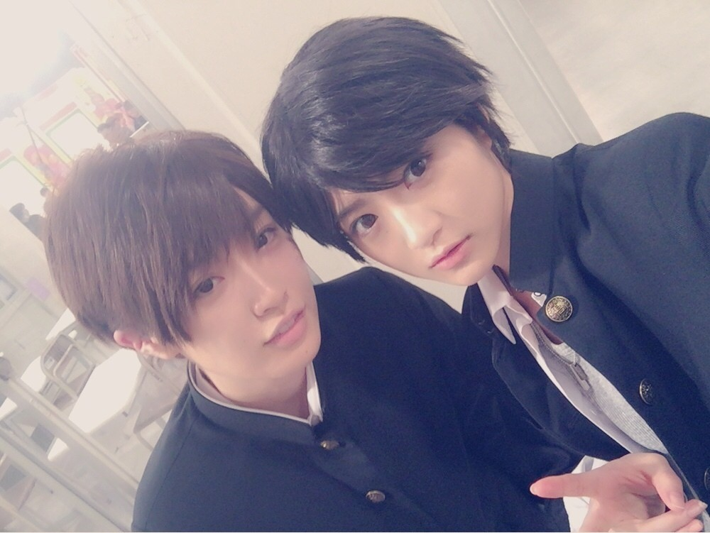

ただ、ひたすらに。。。 価値の無い日常の垂れ流し
ビーチッコ
掃除はいつでも出来る。
by ショーンＹ（元ドットコム(.com)和尚）
水野しず 嬢

過去へのリンク
ツイッター
柿太郎の日々刻々
堕落blog日記（水槽情報）はここ
日々ノ駄文
-----2016/12/31
晴れ。
大晦日。
そこそこ早起き。
今年最後の水槽活動。
水換え。
朝風呂。
帰省の支度。
午後から陸路移動。
新幹線グランクラス席で約４時間。
車中前半は音楽聴いたりしてゆったりと寛ぎ。
後半は隣の酒臭いオッサン（会社経営者）が話しかけてきた。
面倒だなと思いながら話を聞いてみたら
なかなか面白くていい暇つぶしになった。
実家で年越し。
ガキの使いと紅白を交互に眺める。
紅白の司会進行が不安感MAXでサスペンス。
ゴジラとかタモさんマツコとか珍妙な演出がギクシャク。
最後の紅組の勝利にまったく納得感なし。
深夜、寝床であのちゃん
の配信眺める。
おわり。
-----2016/12/30
晴れ。
早朝起床。
ゴルフへ。
天気は晴れたが風が強くて辛い。
散々な結果。
乗用カートではなく自分のキャディバックを
小さな台車みたいなやつで持ち持ち運んで18ホールをラウンド。
つまり、カートに乗ることなく全てのホールを歩いて移動。
スマホの歩数計は22000歩を超えていた。
そして、脚が限界。
芯から冷えて小便が近くなる。
帰宅後、コインランドリエで大量洗濯。
疲れた身体にムチを打って洗濯活動を終わらせた。
完全に早寝希望。
おわり。
-----2016/12/29
晴れ。
終日、ほぼ散歩。
目的は痩せるため。
スマホの歩数計は17600歩だった。
散歩中にベンチで飲んだドトールのカフェモカが美味すぎた。
間違いなく美味しい白米を炊くのを我慢。
比較的早寝。
おわり。
-----2016/12/28
くもり。
早起き。
朝風呂。
定時出社。
仕事納め。
昼、ロースかつ定食。
店員のサービスはダメだが料理はまいう。
デスク周りを整理整頓したかったがヤル気が出なかった。
仕事が納まった感じはしないが帰宅。
風呂。
夜、昨晩ネット注文していたダウンコートが届く。
早速、着て、スーパーまで買い物へ。
暖かい。
比較的早寝。
おわり。
-----2016/12/27
くもり。
朝は生暖かい。
昼から雨。
午後、外出。
遅い時間に酢豚定食。
量が多くて食べ切れず。
帰宅中にいろいろと店を見て回る。
なにも買わずに帰宅。
夜中、ネットでダウンコートを注文。
ノギビンゴ（録画）など眺めながら少々夜更かし。
おわり。
-----2016/12/26
冷える。
連休明けの年内最終週。
諦めの境地。無心。
昼、生姜焼き定食。さしみ付き。まいう。無心。
12月末で期限切れになってしまう百貨店のポイントを消化すべく
百貨店内を見て回ったが欲しいものが見つからず。無心。
暖かそうなダウンコートなどをネットで物色。
あれやこれやと無駄に夜更かし。
おわり。
-----2016/12/25
冷える。
風呂で宇多丸師匠の「タマフル」（タイムフリー）聴く。
宇多丸が選んだムービーウォッチマンの2016年間順位発表。
「ゴッドタン」（録画）みる。
イチ押しの西岡葉月、紺野ぶるま、Ｐちゃんによるエロ哀しい座談会。
葉月のエロトークが赤裸々で楽しきこと。
おわり。
-----2016/12/24
くもり。
ほぼ録画消化。
「ゴルフの真髄」（録画）みる。
ゲストの松森彩夏プロが綺麗。
夜、ゴルフ練習へ。
あまりにも寒い。
人が少なかった。
夜中、暇なんでスーパーで買い物。
意外に人がいた。
テレビ映画「バイオハザードV リトリビューション」（録画）みる。
「ほぼほぼ」みて寝る。
おわり。
-----2016/12/23
風。
録画など消化してのんびりと過ごす。
ドラマ「勇者ヨシヒコと導かれし七人」（録画）の最終回をもう一度みる。
いろいろと深い。
それにしても山田孝之は芸達者。
クリーニング屋、スーパーで買い物。
コインランドリエで大量洗濯。
夜、ゴルフ練習へ。
調子は良かった。
おわり。
-----2016/12/22
くもり。
妙に暖かい。
定時出社。
昼、鯖の塩焼き定食。まいう。
無心で食べた。
つまり、食事中、私は無の境地へ達した。
これが悟り。
午後、外出。
集中。
直帰。
シャツをクリーニング屋に出して買い物。
鍋にする。
録画消化して夜更かし。
おわり。
-----2016/12/21
冷える。
ほぼ定時出社。
昼、サンマの開き。まいう。
夜は忘年会。
経済活動が終わらずにすこし遅刻。
肉。
すぐに腹が一杯になってそれほど食えない。
二次会のカラオケ。
全てを選曲。
とっととタクシーで帰りたかったが
トイレに行きたくなったので電車で帰宅。
風呂入って寝る。
おわり。
-----2016/12/20
晴れ。
昨晩眠れず。
空腹感に負けて菓子パンを食べて寝たら
まったく疲れがとれなかった。後悔。
起床が辛い。
遅い時間に出社。
昼、ウインナーカレーにチーズトッピング。鱈腹。
夕刻から外出。
二時間の悶絶の結果、打開策が降りてきた。
道が拓けた。
安堵。
そして、疲労困憊。
「警視庁 ナシゴレン課」（録画）みる。
オープニングにSPECの当麻と瀬文が出てきた。
ぱるる最高だな。
「乃木坂工事中」（録画）眺める。
いろいろあったけど松村は面白い。
「NOGI BINGO」（録画）みる。
やっぱ乃木坂だな。
「IQ246」（録画）みる。最終回。意味不明。
「情熱大陸」（録画）みる。
幻の大魚イトウ釣り。面白い。
おわり。
-----2016/12/19
晴れ。
水野しず嬢の誕生日。
少々早起きして
8時に出社。
昼、カキフライ定食。ふつう。
ほぼ終日、集計的仮説検証。
居残り。
帰宅後、先日買ったスニーカーを履いてスーパーまで買物散歩。
頭の中で考えがぐるぐる回って眠れず。
おわり。
-----2016/12/18
晴れ。
朝、先日ネット発注していたスニーカーが届いて目が覚めた。
散歩。
久々にバスに乗った。
サッカー「鹿島アントラーズ VS レアル・マドリード」みる。
鹿島リードの展開に胸躍る。
前後半2－2の引き分けで延長戦に突入。
2－4でレアル・マドリードの勝利。
まさかの好ゲーム。
おわり。
-----2016/12/17
晴れ。
風呂と寝床でほぼだらだらと過ごす。
すこし掃除。
おわり。
-----2016/12/16
晴れ。
定時出社。
昼前に歯医者で歯の定期検診。
特に問題なし。
クリーニングで歯石など除去。
昼、地下の中華居酒屋で担々麺。まいう。
諸々のストレスからでしょうか？
休憩中にスマホでスタン・スミス（ゴアテックス）をネット発注していました。
帰宅後、昨日調理したカレーの残りで食事。
やはりカレーは時間が経つほど美味くなる。
ドラマ「勇者ヨシヒコ」（テレ東）みてから
比較的早寝。
おわり。
-----2016/12/15
晴れ。
くもりか。
冷える。
朝、出掛け、週末の土曜日に日時指定していた
ネット注文の商品が配送される。
忙しい朝にこれは少々迷惑。
昼、富士そばでカツ丼。まいう。
夕刻から外出。
帰宅後、サッカー眺めながら
調理したカレーを食べながら
ラインする。
風呂で寛ぎ。
それはそうと
水野しずのラインが面白すぎる。
おわり。
-----2016/12/14
晴れではなかったか。
有給消化。
健康的な休みのはずが、
相当に疲れが溜まっていたのか
結果、ほぼ寝たきり。
夜、8時から本気出す。
クリーニング屋でシャツを受け取ってから買い物。
その後、自宅で鍋を調理してさくっと食べてから
コインランドリエで大量洗濯。
洗い上がった重たい洗濯物を担いで帰宅。運動。
翌日にカレーを調理するために玉ねぎと人参の下準備。
昼寝したので眠れず。
深夜、テレビ映画「ロスト・ボディー」（録画）みる。
とんでもない結末に驚きました。
おわり。
-----2016/12/13
くもり。
寝付きが悪くて寝不足。
体調がすこし回復。
定時出社。
昼、地下の昭和系喫茶店でオムライス。まいう。
食後のヒーコーがまいう。
喫茶店のおばはんが最高。
外出中、でんぱ組.incりさちー（相沢梨紗）にくりそつな女子を目撃。
外出先から直帰。
録画チェック。
「ナシゴレン課」「乃木坂工事中」「ノギビンゴ」「ほぼほぼ」など一気に録画チェック。
高山一実の男装「かずや」が美男子すぎる。
かずや（高山一実）と若（若月佑美）

明日は休みにしたので開放感。
おわり。
-----2016/12/12
好天。
冷えた。
風邪の諸症状。
喉の痛みに加えて
身体の裏側、つまり、太腿の裏、ふくらはぎ、腰、背中などが痛む。
掃除による筋肉痛なのか？
風邪による関節痛なのか？
予定が入ってなかったので
午前中休む。
午後から経済活動。
ユンケルの高いやつ飲んだけど目がしょぼしょぼして駄目。
早々に帰宅。
台所周りを掃除。
シンクからコンロまでを完璧に磨き上げた。
消費期限切れの諸々を捨てた。
早寝希望。
おわり。
-----2016/12/11
好天。
今日も空気乾燥。
断続的に掃除活動を継続。
風呂を丹念に掃除。
なぜか筋肉痛。
オレンジジュースを一日に3本くらいのペースで飲んでいる。
夜、近所のコンビニで菓子パンなど買って食べた。
妙に疲労。だるい。
身体が痛む。
風邪の諸症状かも新米。
なので、ゴルフ練習は中止にした。
織田裕二のドラマ「IQ246」（録画）みて早寝。
話の展開が訳わからん。
織田の演技が普段の織田になってきた。
おわり。
-----2016/12/10
好天。
空気乾燥。
奇跡が起きた。
ここにきて掃除に着手。
風呂やトイレ、台所などの水回りだけはそこそここまめに掃除していたが
その他の居住空間をまともに掃除をするのは数年ぶりのことだと思う。
とにかくホコリが凄い。
床だけでなく水平面であればあらゆる所にホコリが降り積もっている。
捨てるつもりだったTシャツなどを雑巾代わりにして拭き掃除開始。
洗面所、キッチンの床、玄関などを丹念に掃除。
これは終わりなき旅。
昼前に通販で買ったティシュやトイレットペーパーなどの日用品が届く。
昼に電気屋のオッサンが来てインターホンの入れ替え。
カメラ付きの最新タイプになった。
不在時の録画機能などがあってこれは便利なものだ。
風呂。
午後も断続的に掃除。
水槽活動。
水換え。
夕寝。
夜、一人鍋。
夜中も断続的に掃除。
おわり。
-----2016/12/09
好天。
駅員の出鱈目な案内に騙されて10分以上の通勤ロス。
ギリギリで定時出社。
昼、天気が良かったので外で弁当（450円）。ふつう。
一瞬外出。
忘年会に遅れて合流。
しゃぶしゃぶ食べ放題。鱈腹。
帰宅後、風呂。
おわり。
-----2016/12/08
好天。
徐々に年末的な慌ただしさ。
昼、外出先の中華料理屋で四川ゴマ辛味たんたん麺。辛いが美味い。
食後にスタバのヒーコーを駅のホームで飲む。まいう。
なぜか結構な居残り。
早寝。
おわり。
-----2016/12/07
好天。
冷える。底冷感。
朝の通勤時、電車の中で腰が痺れるように痛くなる。
つらいこと。
昼、サンマの塩焼き。まいう。
一駅分、およそ30分位歩いてみた。
知らない道を歩いてみた。
おわり。
-----2016/12/06
好天。
風が冷たい。
定時出社。
昼、オニギリ1個。
午後、新幹線で浪速へ。
先日買ったノイズ・キャンセリング・ヘッドホン（QC35）で音楽を聴きながら移動。
夕刻、ミックスサンドとヒーコー。まいう。
夜、新幹線で帰京。
先日買ったノイズ・キャンセリング・ヘッドホン（QC35）で音楽を聴きながら移動。
夜は冷える。
これは冬。実感。
ドラマ「ナシゴレン課」（録画）みる。
なんだかんだで2時過ぎに就寝。
おわり。
-----2016/12/04
好天。
ばたばた。
昼、遅い時間にカレー。まいう。
夜、友人との飲み会に向かう途中に呼び出しがかかり
急遽経済活動になってしまう。
その後、新人と飲み。
なかなか眠れず。
おわり。
-----2016/12/03
好天。
日中、だらだら。昼寝など。
夕刻から東新宿へ。
友人が付き合っているフィリピーナの誕生日イベントへ。
フィリピンパブの開店時に入店。
漢たちの社交場。
客の年齢層は高め。渋い。
気がつくとあっと言う間に場内満席で大盛況。
土曜日なのに景気がよい。
酒、フィリピン料理（鶏肉）、
ダンス、歌、記念のケーキ、
そしてセクシーなフィリピーナ達との楽しい会話。
終電が近くなったので11時半に離脱。
そこそこ酔う。疲労困憊。
帰宅後、風呂入って就寝。
おわり。
-----2016/12/02
好天。
昼、台湾料理の弁当を買って外で食べる。
クリーニング屋でシャツを受け取って買い物。
なっちゃん（オレンジジュース）をまとめ買い。
「ヨシヒコ」みて寝る。
ムラサキのＪＫコスプレが見処。
おわり。
-----2016/12/01
好天。
昼前から外出。
昼、炒飯と五目そば。ふつう。
何だかんだでそこそこ歩く。
直帰。
帰宅後、クリーニング屋とスーパー。
ゴルフ練習せず。
おわり。
-----2016/11/30
好天。
昼、鯖の塩焼き定食。まいう。
某大学のVIPと知的な会話をする。
疲労感。
おわり。
-----2016/11/29
好天。
冷え。
7時に起床。
ねむい。
定時出社。
昼、外出先でローストビーフ丼。まいう。
今日は「いい肉の日（11／29）」でした。
長崎皿うどん食べる。
帰宅後、ぱるる目当でドラマ「ナシゴレン課」（録画）みる。
おわり。
-----2016/11/28
冷え。
身体が冷えて困る。
昼、天気が良さ気だったので弁当（450円）を買って
外で食べていたら風が冷たくて冷えた。後悔。
ホカロンを買って背中と腹に貼って冷えに耐える。
夜、飲みに付き合う。
人生いろいろ。
おわり。
-----2016/11/27
雨系。
何もする気が起きない。無気力。
部屋で「ほぼほぼ」「ゴッドタン」など録画消化。
夜、意を決してゴルフ練習へ。3カゴ。
おわり。
-----2016/11/26
冷え。
早朝4時に起床。
支度をして5時に出掛ける。
都内で合流して千葉のゴルフ場へ。
久しぶりにアクアラインを渡る。
なんという事でしょう！
先日の積雪によりゴルフ場がクローズ状態。
幹事が唖然。動揺。気抜け。
仕方ないので千葉郊外のガストでモーニング食べて帰る。
幹事を送り届けてから
12時過ぎに帰宅。
なぜか疲労困憊。
寝る。風呂。寝る。寝る。
おわり。
-----2016/11/25
冷え。
スーツのみで出掛けて凍える。
昼前に外出。
昼食抜き。
遅い時間にドトールのミラノサンド。うまいよな。
直帰。
明日のゴルフに備えて早寝希望したが失敗。
おわり。
-----2016/11/24
異常な底冷え。
季節外れの雪。
電車が遅れる。
昼、カレー。ふつう。
午後、外出。
少々居残り。
ネット発注していたヘッドホンとポータブルHDをヨドバシ・アキバで受け取る。
買ったのはこれ
QuietComfort 35 wireless headphones
ヘッドホンのノイズキャンセリング機能は周囲の雑音を見事に消してくれるから驚き。
急に寒くなったのでヘッドホンの装着が苦にならない。
おわり。
-----2016/11/23
休み。
日中、引き篭もり。
ほぼ寝床。
クリーニング屋にシャツ9枚出してから買い物。
コインランドリエで大量洗濯。
夜、ゴルフ練習。
夜になって急激に寒くなる。
おわり。
-----2016/11/22
くもり。
朝6時前に地震で目が覚める。
そこそこ揺れた。
そして二度寝。
地震の影響なのかやたらと電車が遅れる。
病院に直行。
無事にピロリ菌が消えていた。安堵。
一度、帰宅。
午後から経済活動。
昼、駅ナカのカレー屋で普通のカレー。普通。
夕、カレー屋で普通のカレー。普通。
深夜1時からabemaTVで矢口真里が仕切るアイドル番組をみてしまう。
なぜなら、ゲストがゆるめるモ！だから。
やっぱ、あのちゃんは最高だな。
矢口真里はいろいろと残念なことがあったが、
番組の進行スキルは流石の安定感。
ネットバラエティーなのに実に安心してみてられる。
パジャマで歌舞伎町のコンビニに入るあのちゃん

おわり。
-----2016/11/21
くもり。
朝、地震で揺れた。
スーツで活動。
昼、目鯛のカマの西京焼き。うーん、美味。
ヘッドホンが欲しくなる。
早寝希望。
おわり。
-----2016/11/20
晴れ。
8時過ぎに目が覚める。
テレ東深夜のバラエティー「ほぼほぼ」（録画）みる。
あのちゃん最高だな。
昼前に小太りと合流してゴルフ練習。
ファミレスでドリンクバーのアンケートに答えたら500円のカード貰った。
ツイキャスなど聴いて暇潰し。
お楽しみの「乃木坂工事中」みて寝る。
おわり。
-----2016/11/19
ほとんど記憶がない。
朝に目が覚めた。
夜に買い物。
早寝。
おわり。
-----2016/11/18
晴れ。
起床したくない。
昼、時間なくてオニギリ2個。
午後、外出先でいい話が聴けた。
すこし居残り。
夜、天下一品でこってり麺ラーと餃子を食べてしまう。
肥満を警戒して遅い時間にゴルフ練習へ。
2カゴで限界。
深夜の低予算ドラマ「勇者ヨシヒコ」みて寝る。
おわり。
-----2016/11/17
くもり。
昼、地下の中華居酒屋で担々麺。まいう。
苦手な活動で疲労困憊。
夜、ストレスから炒飯と餃子を食べてしまう。
肥満街道一直線。
おわり。
-----2016/11/16
くもり。
定時出社。
昼過ぎから外出。
すこし遅い時間に外出先のスナック系の料理屋でザンギとろろ定食。まいう。
夕刻、集中。
夜、床屋で散髪。すっきり。
おわり。
-----2016/11/15
くもり。
朝、早い時間に病院に直行して、
ピロリ菌の検査の為に早朝に採取した便を提出。
ピロリ菌が壊滅していることを祈る。
午後から外出。
昼、外出先の日高屋でとんこつ麺ラー。熱い。
展示会のスタッフと合流。
帰宅後、サッカーWC最終予選「日本VSサウジアラビア」を眺める。
2-1で日本の勝ち。
風呂に入ってから早寝失敗。
ドラマ「警視庁ナシゴレン課」（録画）みる。
島崎遥香（ぱるる）の演技は嫌いじゃない。
むしろ好き。
おわり。
-----2016/11/14
はれ。
午前中、集中して仕上げる。
昼、富士そばでカツ丼（単品）。まぁうまい。
午後、外出。
帰宅後、だらだらと過ごす。
おわり。
-----2016/11/13
くもり。
午前中、だらける。
テレ東の土曜深夜バラエティー「ゴッドタン」「ほぼほぼ」の録画チェック。
午後からクルマで会社へ。
久々に休日の経済活動。
おわり。
-----2016/11/12
さむい。
朝、地震で目が覚めた。
まだ喉に違和感あるが体調は回復。
昼風呂。
録画やネットTVなど眺める。
夜8時半から本格的な活動。
クリーニング屋で仕上がったシャツ4枚を受け取り。
スーパーで買い物。
コインランドリエで大量洗濯。
鍋の下準備。
ゴルフ練習。2カゴ。
給油。
遅い夕食。
眠くて寝る。
おわり。
-----2016/11/11
雨。さむい。
通勤困難。
昼、富士そばでカレーと蕎麦。
チープなカレーが食いたかった。
夕方から外出。
そして直帰。
体調回復の兆し。予兆。
睡魔に負けて就寝。
おわり。
-----2016/11/10
６時に起床。
あまり眠れず。
体調回復せず。
終日一時間ごとにイソジンでうがい。
朝、新幹線で名古屋に移動だがや。
終日立ち仕事。
脚が死亡。腰が死亡。
昼、牛たん定食。まいう。
新幹線で帰京。
風呂入ってから早寝。
おわり。
-----2016/11/09
風があって寒い。
依然として体調不良。
喉が痛む。
直行。
昼、生姜焼きとミックスフライ定食。うまい。
が、量が多くて食い切れず。
夕刻から外出。
直帰。
早めの帰宅。
モツ鍋を調理して食べる。
明日に備えて早寝必須。
おわり。
-----2016/11/08
早朝５時に起床。
体調不良。
喉痛む。だるさ。
朝、葛根湯飲む。
空路、福岡へ。ねむい。
立ち仕事でしんどい。
昼、中華料理屋で酢豚定食。普通。
葛根湯のむ。
終日立ち仕事。脚が限界。
マッサー希望。
夜、空路で帰京。だるい。
葛根湯飲んで早寝。
おわり。
-----2016/11/07
喉の痛み。
風邪の予感しかない。
忙しくて昼抜きで経済活動。
ユンケル（高いやつ）飲む。
夕刻にハンバーグカレーで栄養つける。
早めの帰宅。
葛根湯飲んで早寝。
おわり。
-----2016/11/06
休日らしくほぼ何もせずに過ごす。
米を炊いたのでおにぎりを作りまくる。
ほぼ無心で。
ゾーンの境地で。
徐々に体調が悪くなる。
おわり。
-----2016/11/05
くもり→晴れ。
午前3時過ぎに目が覚めてしまった。
暇なので「勇者ヨシヒコ」（録画）みる。
トキオのパロディーと相棒のモノマネがうける。
今回のネタはいろいろとやばい。
支度してゴルフに出掛ける。
いつものゴルフ。
前半いまいち、後半ぼちぼち。
昼、生姜焼き定食。まいう。
帰りに事故渋滞に巻き込まれて小便を漏らしそうになった。
限界まで我慢した後の大放尿は快感。
スーパーで弁当など買って20時過ぎに帰宅。
風呂入って早寝。
おわり。
-----2016/11/04
晴れ。
よく眠れる。
昼、自分で握ったオニギリ２個食べる。
帰りにタワーレコードでラブリーサマーちゃんのメジャーデビューＣＤ「ＬＳＣ」を購入。
明日はゴルフなので早寝。
おわり。
-----2016/11/03
さむい。
冬の気温。
日中は寝床。
録画など見ていたのだと思う。
夜、ゴルフ練習。2カゴ。
おわり。
-----2016/11/02
さむい。
朝、昨晩握ったオニギリ2個。まいう。
昼、博多麺ラー。
早めの帰宅。
19時から21時の2時間枠で再配送手配した佐川の宅配に間に合うように帰宅。
19時過ぎに荷物を受け取りに成功。
ちなみにヤマトは20時から21時の1時間枠が指定できるのでやっぱ便利だと思う。
水槽の水換え。
ここ数日乾燥してきたので水位が下がるのが早い。
コインランドリエで大量洗濯。
シャツ9枚をクリーニング屋に出して
スーパーで買い物。
その後、ゴルフ練習。2カゴ。
夜、底冷え。
テレビ映画「天使と悪魔」（録画）みる。
バチカン市国を舞台に目まぐるしく展開する謎解き映画。
前に1度みたことがあった。
おわり。
-----2016/11/01
さむい。
直行。
昼、インド料理屋でカレーバイキング。
カレーがいまいち。
午後、座りっぱなしで話を聴く。
人工知能、IOT、ビッグデータなどの知見を得る。
夕方18時に開放。
録画消化。
暇なので
米を炊いてオニギリを握ってみた。
早寝。
おわり。
-----2016/10/31
さむい。
日中は温い。
爆睡。
明け方に鮮明なる夢をみた。
夢の中でいろいろあって
ボウリング場へ行ったみたら
シューズの貸出係を弊社社長がやっていて
活き活きとした表情で親しげに話しかけてきたので
恐る恐る話を聞いてみると
どうやらボウリング場の支配人に転身したらしくて
ちょっとびっくりしていたら、
ふと目が覚めた。
目覚めの朝風呂（エモリカ湯）にゆっくりと浸かってしまう。
昼、酢豚弁当（500円）を買って外で食べる。まいう。
夕刻から外出。
切羽詰まった二本立て。
AbemaTVのドラマチャンネルでやってる勇者ヨシヒコなどを視聴。
早寝希望。
おわり。
-----2016/10/30
さむい。
ひえる。
終日、ほぼ寝床で録画など眺める。
米を炊いて梅と塩昆布のオニギリを握って食べる。
乾燥により脛が肌荒れ。
エモリカ風呂で温まる。
完全なる夕寝。
一日で37歩しか歩いていなかった。
相当に疲れていたのであろう。
丸一日寝てた割に早寝。
おわり。
-----2016/10/29
好天。
さむい。
6時に起床。
そもそもの睡眠時間と同室のいびきなどにより3時間睡眠。ねむい。
時間がないので
その他爆睡組を叩き起こす。
好天の下、楽しい秋ゴルフ。
後半、いつも如く足腰がふらつく。
ゴルフ合宿の幹事終了。
昼、焼きカレー。カロリーたかい。
夕方、焼きそば。カロリーたかい。
新幹線で爆睡。
峠の釜めし。カロリーたかい。
ハーゲンダッツ（抹茶）。たかい。
早寝。
おわり。
-----2016/10/28
午後、雨。
定時出社。たまには。
昼前に外出。
会議室でオッサン達と弁当を食べるだけの簡単なお仕事です。
午後半休。
ギャルソンでジャケット買う。
夕刻からゴルフ合宿に出発。
メンバーと合流後、新幹線で軽井沢へ。
深夜までぐだぐだと。
なぜか、岡崎体育で盛り上がる。
おわり。
-----2016/10/27
好天。
最高レベル。
8時間以上も睡眠。
我ながら驚くべき睡眠力。
昼、タイ料理の弁当（680円）を買って外で食べる。まいう。
夕刻から外出。
夜、味噌麺ラーを調理して食べる。
早寝希望。
おわり。
-----2016/10/26
好天。
暑いくらい。
ヤル気が沸かないので
朝からのんびりしてしまう。
通勤不運。
昼、焼肉屋でビックハラミ定食。まいう。
午後、展示会を見学。
会場内の客に飢えた空気と出展者の熱気に圧倒されて精神疲労。
早めの帰宅後、ゴルフバッグをヤマトの営業所に持ち込んで発送手配。
その後、クリーニング屋でシャツを受け取って買い物。
夜、味噌麺ラーを調理。
早寝。
おわり。
-----2016/10/25
好天。
起床が辛い。
会社に行く気分ではないのでMBPを持参してスタバで作業。
いろいろと捗る。
昼、地下の中華居酒屋で味噌麺ラー。まいう。
少々居残り。
夜、カツカレー、辛口がうまい。
一万歩をクリアーするために２駅歩く。
寝る前にテレビ映画「バビロンAD」（録画）みる。
新たなる救世主の誕生を描いたSF映画。
意外に面白かったが終盤の展開が端折りすぎ。
ほぼ意味がわからん。
すぐに眠れる。
おわり。
-----2016/10/24
秋晴れ。
底なし睡眠。
起床困難。
全身倦怠。
昼、さばの塩焼き定食。まいう！
帰宅後、クリーニング屋にシャツを出してから買い物。
オニギリの具材（梅干し、塩昆布）などを買い込んだ。
夜中、散歩。
スマホの健康アプリでログを残しながら
スマホで音楽聴きながら
スマホでポケモンしながら
リズムに合わせて腰を捻りながら歩いた。
今後は一日１万歩は歩く。ことに決めた。
早寝希望。
おわり。
-----2016/10/23
日中の天気不明。
日中、録画と昼寝のだらけた生活。
女芸人ロリィタ族の切実ポッドキャスト
「ロリィタ族。の元カレ全員芸人あるある」を聴きながら暇潰し。
「10月14日の回、彼氏と別れて大泣き」おもしろい！
夜９時すぎから本気。
夜中、30分間ランニングして汗を流す。
真夜中、コインランドリエで洗濯。
普段はクルマで往復するところを徒歩で往復。
重たい洗濯物を担いで足腰を鍛える。
洗濯機が運転中、ポケモン散歩。
なんとか一万歩達成。
「乃木坂工事中」（録画）と「IQ246～華麗なる事件簿～」（録画）みてねる。
織田裕二のIQ246は滅茶苦茶な話だな。
キャストは豪華なのにいろいろと残念。
おわり。
-----2016/10/22
秋晴れ。
朝風呂。
昼、2時間ポケモン散歩。
夕風呂。
完全な夕寝。
夜、ゴルフ練習。2カゴ。
夜風呂。
1時間ほどポケモン散歩。
深夜、大根1本を買ってきておでんを仕込む。
テレ東の「ゴッドタン」「ほぼほぼ」みて寝る。
おわり。
-----2016/10/21
秋晴れ。
暑くもなく寒くもなく。
朝風呂。
会合に直行。
昼、唐揚げ弁当（450）を買って外で食べる。
夜、よもだそば銀座店で半たぬき蕎麦とインドカレーをたべる。まいう。
風呂入ってからポケモン散歩に出かける。
帰りに禁断の米を買う。
ドラマ「勇者ヨシヒコ」みる。
おわり。
-----2016/10/20
暑い。
身体が重くて動く気がしない。
午前中、休む。
朝風呂。
昼、オニギリ1個。
コンビニで買ったお菓子を一気食い。
夕刻から外出。そして直帰。
夜、散歩。
おわり。
-----2016/10/19
まだすこし蒸す。
全身倦怠。
昨日のランニングで身体中が疲労感。
昼前に外出。
昼、遅い時間によもだそば銀座店で半たぬき蕎麦とインドカレー。まいう。
夜、ゴルフ練習。2カゴ。
だるい。
ドラマ「警視庁 ナシゴレン課」（録画）みる。
ぱるる（島崎遥香）がいい味出しているからみてみよう。
おわり。
-----2016/10/18
蒸し暑い。
完全なる起床困難。
まだまだ眠れる底力。
基本的にねむぃ。
腰が痛い。
座らずに経済活動
昼、富士そばでかつ丼。まいう。
夕刻から外出。
そして直帰。
風呂に入ってから
急に走りたくなって30分間走る。
そして、また風呂。
早寝希望。
おわり。
-----2016/10/17
雨。肌寒い。
すこし蒸す。
睡眠不足。
月曜日は辛い。
昼、地下の中華居酒屋でもやしそば。まいう。
夜、ゴルファー練習。
体力なくて２カゴが限界。
比較的早寝。
食っているので
まったく痩せない。
おわり。
-----2016/10/16
好天。
完全熟睡。
テレビ映画「孤独な嘘」（録画）みる。
裕福な弁護士の嫁が不倫してて
その不倫相手の男のクルマを暴走させて事故って
家政婦の夫を殺してしまって
その事実がバレて弁護士の旦那を苦悩させて
警察に追い詰められたけどギリギリで切り抜けたけど
結局は旦那を捨てて末期ガンの不倫相手の看病に尽くす話。
まぁ、とにかく酷い話でした。
午後、ゴルフ中継眺める。
松山が優勝。お見事。
完全なる夕寝。
夜中、コインランドリエで洗濯活動。
眠れず。
夜更かし。
シャークネードシリーズ第四弾「シャークネード ザ・フォース・アウェイクンズ」予告編。
おわり。
-----2016/10/15
好天。
少々冷える。
テレビ映画「L.A. ギャング ストーリー」（録画）みる。
凶暴なギャング一味を壊滅すべく暴力で闘いを挑む警察官チームの死闘。
また「勇者ヨシヒコ」（録画）みる。
何度みても面白い。
ゴルフ中継眺める。
夕風呂。
夜中、ポケモン散歩。
さて、残りの人生
なにをしていいのか
まったくわからなくなってきた。
おわり。
-----2016/10/14
冷えた。
睡眠不足。
昼、ウインナー・カレーにチーズトッピング。鱈腹。
夕刻から外出。
ヒーコーで休憩。
クリーニング屋にシャツを出す。
ドラマ「勇者ヨシヒコ」みる。
今週は最高だった。
ムラサキ（木南晴夏）が豚になって
「室井佑月でーす！ブヒッ－！」って最高だった。
すっかり秋だ。
おわり。
-----2016/10/13
冷えた。
寝床天国。
まだまだ眠れる。
昼、グリーンカレー弁当（650円）を買って外で食べる。
食後のヒーコーがまいう。
帰宅後、テレビ映画「ボーン・アルティメイタム」（録画）みる。
ゴルフ中継眺める。
おわり。
-----2016/10/12
冷えた。
身体が痺れて起床が辛い。
急に冷え込んできて疲れが出てる。
昼から外出。
昼、遅い時間に外出先で炒飯。量が多い。
先日から漫画「東京タラレバ娘」（東村アキコ）をスマホアプリで1～6巻まで読んでみた。
ドラマ化されて吉高由里子が主演する話題の漫画。
ポイントが溜まっていたのでＤブックマイ本棚というドコモの読書アプリで買ってみた。
30過ぎた女3人組が2020年東京五輪までに結婚することを夢見てあたふたする話。
妻子持ちとの不倫あり、
元カレのバンドマンのセフレあり、
年下美男子に振り回されたりで
思ったよりドロドロの展開。
テレビ映画「ボーン・アイデンティティー」「ボーン・スプレマシー」（録画）みる。
無駄に夜更かし。
おわり。
-----2016/10/11
確実に冷えた。
起床が辛い。
連休中の昼夜逆転の生活サイクルが朝寝を求める。
昼、とりフライとクリームコロッケ定食。まいう。
急に頭が痛くなる。
寒気も。
「日本VSオーストラリア」眺める。
結果1－1のドロー。
フィジカルで勝るオーストラリア相手に
日本の組織的な守備が機能していた。
早寝希望。
おわり。
-----2016/10/10
ひんやり。
朝寝。
水槽観察。
サカナの動きを見るのが嬉しみ。
テレビ映画「ブリッツ」（録画）みる。
ジェイソン・ステイサム（ハゲ）の刑事モノ。
荒くれ者の刑事（ジェイソン）が警官殺しの犯人をゲイの上司と追い詰める。
なんとなくテレビドラマっぽい。
夕寝。
ゴルフ練習。2カゴ。
おわり。
-----2016/10/09
午前中に雨。
未明にテレビ映画「フライ」（録画）みる。
何度見ても気味が悪い。
そして、悲しい最後。
朝寝で熟睡。
録画消化。
久々に水槽活動。
外掛けフィルターの掃除。
底床の掃除。
水草のトリミング。
テレビ映画「許されざる者」（録画）みる。
クリント・イーストウッドの同名西部劇を明治初期の北海道を舞台にしてリメイク。
すっきりしない話の展開。
おわり。
-----2016/10/08
午前中に雨。
完全なる昼寝。
夜、ゴルフ練習へ。2カゴ。
深夜バラエティー「ほぼほぼ」（テレ東）で催眠術にかかったあのちゃんがキュート。
深夜、ポケモン散歩。
タマゴが孵ってピカチューが出てきた。
おわり。
-----2016/10/07
晴れ。
爽やかな好天。
睡眠欲旺盛。
まだまだ眠れる。まだ行ける。
昼、450円の弁当。いまいち。
早めに帰宅。
ゴルフ練習。2カゴ。
夜中、近隣をポケモン散歩。
ドラマ「勇者ヨシヒコ」みる。
遂に4年越しの第三章が始まった。
おわり。
-----2016/10/06
くもり。
寝不足。
昼、とんかつ屋でニンニクとんかつ定食。まいう。
帰宅中の電車内、スマホのワンセグで
WCアジア予選「日本VSイラク」の前半をすこし眺める。
帰宅してからテレビつけたら、まだサッカーやっていて
後半アディショナルタイムに決勝シュートが決まって2－1で劇的勝利。
なにか面白いことないかね。
おわり。
-----2016/10/05
くもり。
全身疲労。
完全熟睡。
昼、生姜焼き定食。完全にうまい。
無心で食べた。
夕刻から外出。直帰。
帰宅後、一瞬で寝落ち。
腰が痛みだした。
おわり。
-----2016/10/04
まだ暑い。
30度超え。
寝不足。
半袖シャツで行動。
昼、地下の中華居酒屋で中華丼。うまいね。
午後外出。
外出後、会社に戻ってプロ幹事業務。
夜、なぜかボウリングに興じる。ド下手。
その後、飲み会。
いろいろと驚愕。
疲労困憊。
おわり。
-----2016/10/03
天気忘れた。
早めに起床。
早めに行動開始。
昼、さんまの塩焼き定食。まるで美味い。
日中、慌ただしく経済活動。
帰宅後、洗濯活動。
洗濯機が運転中にクリーニング屋にシャツを出して買い物。
なかなか眠れず。
おわり。
-----2016/10/02
また暑くなった。
睡眠不足。
午前中だらける。
午後、女王（クイーン）と小太りと3人でショートコースへ出掛ける。
9ホール。途中ドライバーを使えるミドルホールもある。
暑かったが楽しかった。
上がり2ホールでバーディーが続いて気分がよい。
ラウンド後に「ガスト」でハンバーグ食べて帰る。
ガストに行ったの数年ぶり。
意外に居心地が良かった。
風呂で松山千春のラジオを聴いてしまう。
ラブリーサマーちゃんの新曲最高！
おわり。
-----2016/10/01
霧雨。肌寒い。
夜、ゴルフ練習へ。3カゴ。
腰が痛くなったのでサロメチールを塗ってみた。
ヒリヒリと効く。
夜更かし。
ゴッドタン、ほぼほぼのテレ東深夜バラエティーで一日を締める。
それにしてもあのちゃん最高だな。

おわり。
-----2016/09/30
月末。
涼しくなった。
睡眠が捗る。まだまだ眠い。
なので、起床が辛い。
昼、さばの塩焼き。まいう。
夕刻から外出して直帰。
夕食はインドカレーと蕎麦。まいう。
ドラマ「十五年後の補習」みる。
松下奈緒のミステリードラマ。
安っぽい演出が目立った。
「寺門ジモンの取材拒否の店」（録画）みてしまった。
宇多田ヒカルの顔って不自然だな。
柿を食べる。
夜更かししたかったが睡魔に負けて寝落ち。
おわり。
-----2016/09/29
くもりで小雨。
蒸し蒸し。
直行。
昼、メンチカツ定食。まいう。
無心で食べた。
ヒーコー飲みながら休憩。
断続的な経済活動。
ヒーコーで休憩。
直帰。
クリーニング屋で仕上がったシャツを受け取る。
ゴルフ練習。2カゴ。
柿を食べる。
早寝。
おわり。
-----2016/09/28
蒸す。
昼、弁当（500円）。
久々に読書。
帰宅後、ぼんやと無駄に夜更かし。
柿を食べて寝る。
おわり。
-----2016/09/27
蒸す。
昼、弁当（550円）。
帰宅後、生活活動。
コインランドリエで大量洗濯。
シャツをクリーニング屋に出してからスーパーで柿を買う。
ゴルフ練習。2カゴ。
柿を食べて寝る。
おわり。
-----2016/09/26
蒸し暑い。
また夏。
完全によく眠れた。
昼、グリーンカレー弁当を買って外で食べる。
午後、外出。
蒸し暑い。
帰宅後、洗濯→ゴルフ練習。
ゆるめるモ！（You'll Melt More!）『はみだしパラダイス』
おわり。
-----2016/09/25
蒸し暑い。
早めに起きて支度。
定時前に出社して経済活動。
いろいろと多忙。
昼、500円の弁当を買って外で食べる。のんびり。
ベルサッサ。
帰宅後、時間があったが、ほぼ、何もせず。
それは、無。
早寝。
おわり。
-----2016/09/24
午後から雨あがる。
午前中にadidasのシューズが届いた。
スタン・スミスもスーパースターも最高だな。
録画など。
新しいシューズですこし散歩してたら雨が降ってきた。
夕刻、ゴルフ練習。3カゴ。
テレビ映画「大脱出」みた。
スタローンとシュワルツネッガーの二人が共演した完全バカ系アクション映画。
脱獄のプロと大物犯罪者が脱出不可能な監獄から本当に都合よく脱走する話。
二人のバカ面見てるだけで幸せな気分になるからあら不思議。
テレ東深夜の「ゴッドタン」から「ほぼほぼ」で締め。
おわり。
-----2016/09/23
まだ雨。
5時過ぎに早朝起床。
ねむい。
新幹線で移動。
名古屋を経由して近鉄で三重へ。
昼、3000円のうな重。まいう。
夕刻、近鉄→新幹線で帰京。
名古屋駅で展示中のNSXを目撃。
帰宅後、テレビなど眺めて過ごす。
夜更かし。
おわり。
-----2016/09/22
休み。
朝寝。
昼寝。
夕寝。
そして、昼夜逆転。
夜、ゴルフ練習。2カゴ。
まったく眠れず。
勢いでadidasのシューズをネット発注。
オリジナルス スタンスミス [STAN SMITH CF]
アディダス スケートボーディング スーパースター [SUPERSTAR VULC ADV]
おわり。
-----2016/09/21
台風が通り過ぎて平穏。
定時出社。
すぐに外出。
昼、500円の黒酢の酢豚弁当を買って外で食べる。まいう。
熱くもなく寒くもなく最高の気候。
午後、外出。
その後、居酒屋で業界団体の会合。
ほろ酔い気分で一駅歩く。
スマホケースが黄ばんできたので
新しいのを購入。
帰宅後、風呂。
ツイキャス祭り。
深夜、MacBookPro(Retina,13-inch,Early2015)のOSを
新しくリリースされた「macOS sierra」にバージョンアップしてみる。
おわり。
-----2016/09/20
雨。
台風接近で肌寒い。
昨日のゴルフ練習で筋肉痛。
肌寒いくらいが睡眠に丁度よい。
なので起床が辛い。
昼、さばの塩焼き。まいう！
夕刻、風が強くなる。
カレーうどんを食べる。
風呂で寛ぎ。
おわり。
-----2016/09/19
雨。
連休三日目。
だらだらとテレビなど眺めて過ごす。
夜、久々にゴルフ練習。3カゴ。
プリペイドカードの残高が1万円あったのに
新たに1万円分のプリペイドカードを購入してしまう。
合計2万円分の練習が出来るわけです。
練習後、クリーニング屋でシャツを受け取ってから
スーパーで買い物。
水が一番美味しい。
台風接近が気になって少々夜更かし。
おわり。
-----2016/09/18
くもり。
連休二日目。
夕刻から本気出してコインランドリエで大量洗濯。
クリーニング屋にシャツ8枚を出す。
スーパーで買い物。
勢いでゴルフ練習にも行くつもりだったが
雨が降ってきたので止めた。
おわり。
-----2016/09/17
くもり。
涼しくなった。
連休一日目。
テレビを眺めてぼんやりする。
タモリ倶楽部など録画消化。
完全なる夕寝。
テレ東深夜の「ゴッドタン」「ほぼほぼ」を見てから
深夜のテレビ映画「俺たちダンクシューター」みた。
田舎の弱小バスケチームが躍進するコメディー映画。
ウィル・フェレルが主演する“俺たち●●”シリーズはハズレなし。
おわり。
-----2016/09/16
くもり。
直行。
ヒーコー屋で待ち合わせ。
昼、外出先の中華料理屋で炒飯。
大盛りにしていないのに完全なる大盛り。苦悶。
少々居残り。
帰宅後、クリーニング屋にシャツを出せなかった。
「アメトーーク」（録画）みる。
竜兵会の解散。
ダチョウ倶楽部に勢いがなくて白けたね。
今年はあまり蚊にさされない。
近隣の蚊の人口が減少しているのではないか。
会社PCや自宅Macで活用していた
Webカレンダーアプリ「Sunrise」が本日でサービス停止。
Googleカレンダーと同期がとれて便利だったのに。
これはちょっとショック。
寝落ちして三連休に突入。
おわり。
-----2016/09/15
くもり。
眠くて起床がつらい。
昼、遅い時間に富士そばのかつ丼。
天ぷら食いながらビール飲んでる三人組リーマンがいた。
帰りに一時間の揉みほぐし。気分転換。
猫背を指摘される。
腕が真上に上がらない。
早寝希望。
おわり。
-----2016/09/14
くもり。
未明まで寝付けなくて３時間しか眠れず。
寝不足。
昼に外出。
居酒屋でちらし寿司を食べたが不味かった。失敗。
展示会を見学。
会場内を散々歩いて脚が痺れる。
バスで移動。快適。
冷房効いてるしWi-Fi繋がるし座れたし。
夕刻からの経済活動を任せて離脱。
スタバでヒーコー飲みながら休憩。
帰る。
そして、録画など眺めながらだらける。
だらけ癖が抜けない。
涼しくなってきたし早く練習再開しなければ。
風呂入ってから比較的早寝。
おわり。
-----2016/09/13
雨。
涼しくなってやたらと眠れる。
朝寝。
朝、自席でオニギリを食べてピロリ菌退治の薬を飲む。
昼、新しく出来た店でグリーンカレー。うまい。
まっすぐ帰る。
夜、カップ焼きそばを食べてピロリ菌退治の薬を飲む。
乃木坂工事中、ガキの使いなどの録画消化。
あのちゃんのツイートがいろいろと気になる。
早寝希望。
おわり。
-----2016/09/12
涼しくなった。
完全熟睡。
7時間位眠った。
朝、会社でオニギリを食べてピロリ菌退治の薬を飲む。
昼、地下の中華居酒屋で五目焼きそば。
うまいが量が多い。
完全に腹が膨れた。
コンビニのミニ弁当を食べてピロリ菌退治の薬を飲む。
涼しくなってきたので
ゴルフ練習に行こうと考えていたが
行かなかった。
このままズルズルとナメクジ化するな。
早寝希望。
おわり。
-----2016/09/11
涼しくなった。
朝、カップヌードル（カレー味）を食べてピロリ菌退治の薬を飲む。
ゴッドタンなど録画消化。
女子プロゴルフ中継を眺める。
横になってスマホを眺めていたら寝落ちした。
最近、寝落ちが多い。
薬の副作用なのであろうか。
夜、買い物散歩。涼しい。
いなり寿司など食べてピロリ菌退治の薬を飲む。
早寝。
おわり。
-----2016/09/10
蒸し暑い。
未明、ヨドバシカメラで二万円のイヤホン「Final F3100」をネット発注。
朝、二度寝してしまって
ピロリ菌退治の薬を飲むのが昼前になってしまった。迂闊。
昼過ぎに二万円のイヤホン「Final F3100」が届いた。
早速、スマホに繋いで聴いてみた。
やはり、いい音だ。
録画消化。
風呂に入る。
夜、白米を炊いて食事。
ピロリ菌退治の薬を飲む。
夜中、スマホで音楽を聴きながら散歩。
涼しくなってきた。
おわり。
-----2016/09/09
蒸し暑い。
少々寝不足感。
朝、菓子パンを食べてから
ピロリ菌の薬を飲む。
昼、遅い時間に麺ラー。まいう。
外出して会合。
直帰。
帰りに大型家電量販店ヨドバシカメラでイヤホンを物色。
2万円のイヤホン「Final F3100」が欲しくなった。
シンプルなデザインで軽い。
視聴したところ音も透明感があってボーカルが際立つ感じ。
夕食後、ピロリ菌の薬を飲む。
薬の副作用なのか判らないが
ちょっと横になると直ぐに寝落ちする。
おわり。
-----2016/09/08
蒸し暑い。
中途半端な時間に目が覚めてしまって熟睡に失敗。
起床が辛い。
朝、ピロリ菌を殺す薬を飲む。
午前中、直行で展示会場へ。遠い。
昼、展示会場内の屋台でカレーを食べる。
まぁまぁ美味い。
夕刻から外出。直帰。
夜、ピロリ菌を殺す薬を飲む。
テレビ映画「超高速!参勤交代」（録画）みる。
漫画みたいなバカ映画。
おわり。
-----2016/09/07
蒸し暑い。
半休にして朝から病院へ。
人生初の胃カメラ検診。
採血をしてから胃カメラを口から入れてピロリ菌の有無を検診。
胃カメラはほぼ地獄の罰ゲーム。
結果、ピロリ菌の陽性判定。
一週間分のピロリ菌を消滅させる飲み薬を出してもらう。
昼、牛タン屋。
昼食中、店のBGMでBatdanceが流れた。
午後から経済活動。
外出先から直帰。
おわり。
-----2016/09/06
蒸し暑い。
直行。
昼、弁当。いまひとつ。
疲労困憊。
早めの帰宅。
大量洗濯。
翌日に胃カメラがあるので
夜9時までに食事を済ます。
サッカー日本代表戦「日本ＶＳタイ」みる。
2－0で日本が勝利したが面白くない試合だった。
おわり。
-----2016/09/05
蒸し暑くて苦痛。
朝寝。
二度寝、三度寝、当たり前。
なにかとギリギリ。
昼、遅い時間に吉野家で生姜焼定食。まぁ無難。
帰宅後、クリーニング屋でシャツを受け取る。
買い物。
今夜もDr Pepperを買って飲んだ。
今日は早く寝る。
おわり。
-----2016/09/04
やはり秋の気配。
ミノ虫みたいなだらだら生活。
テレビ映画「ロックンローラ」（録画）みる。
ロンドンの裏社会に君臨するボスとダメ人間たちの悲哀。
妙にスタイリッシュな映像だと思ったらガイ・リッチー監督の作品だった。
完全なる夕寝。
風呂で寛ぐ。
夜、近所のコンビニでオニギリなどで夕食。
深夜、無性にDr Pepperが飲みたくなって
近くの自販機まで買いに行く。
おわり。
-----2016/09/03
涼しくなった。
精神がだらける。
タモリ倶楽部、ゴルフの真髄など録画消化。
夕寝。
テレビ映画「X-MEN ファースト・ジェネレーション」（録画）みる。
この映画は以前にみた気がする。
夜に雨。
おわり。
-----2016/09/02
暑い。
昼前に外出。
昼、地下の中華喫茶ではなく中華居酒屋で青菜そば。まいう。
一日がばたばたと過ぎる。
歯医者で歯のクリーニング。
週末の開放感から脳内が白紙にリセットされたのだろう
宅配便を時間帯（20～21時）指定していたことをすっかり忘れていて
買い物をすべく街中を彷徨いていた。
慌てて帰宅。
20時10分に帰宅。
20時20分の配送の受け取りに成功。危なかった。
クリーニング屋にシャツを8枚出す。
その後、買い物。
テレビ映画「オール・ユー・ニード・イズ・キル」（録画）みる。
トム・クルーズ主演のSFアクション。
タイムスリップを繰り返しながらエイリアンとの死闘を繰り返す奇天烈な話。
ぼちぼち面白かった。
アメトーーク「ひんしゅく体験 ナダル・アンビリバボー」（録画）みる。
久々に面白かった。
寝落ち。ほぼ気絶。
おわり。
-----2016/09/01
また夏。
蒸し暑い。
4時半頃に目が覚めてしまったので録画消化。
その後、二度寝。
昼、遅い時間にカレー屋でさくっと食べるつもりが痛恨のミス。
カレーが運ばれてきてその盛りに驚愕。
米が山盛り。ルーも山盛り。
こんもりとしたカレーの山。
これはもう、到底食べきれる量ではなかった。
どうやら券売機のメニューボタンを間違って押していたらしい。
意に反して「大盛りカレー」を発注していた。
仕方ない。
ここは一丁、食べてやるか！と意を決して
汗だくになりながら必死で食らいついたがやはり無理。
店員に「大盛りにしておきながら残してごめんなさい」と言い訳しながら店を出た。
オフィスで一番搾りと二番絞りの麦芽の風味を飲み比べてみた。
一番搾りはコクがあって甘い。
二番絞りは薄くて不味い。
夜、床屋で散髪。
担当の理容師に勧められた毛根を刺激するヘッドスパを試してみた。
爽快。一瞬蘇生。
早寝希望。
おわり。
-----2016/08/31
好天。
スマホのデータ通信が128Kbpsの速度制限。
今日一日の辛抱。
昼、カレー屋でウインナーカレー。鱈腹。
食後のヒーコーが美味い。
夕刻から外出。
外出先から直帰。
帰宅後「冒険少年」（TBS）などを眺める。
早寝。
おわり。
-----2016/08/30
台風が過ぎて行った。
特に影響はなかった。
昼、さわらとたこの刺身にヒレカツの盛合せ定食。まいう。
夜、会食。ご馳走になる。
その後、懐かしい洋楽バー。
遅かったのでタクシー帰宅。
帰宅後、疲れたので直ぐに寝る。
おわり。
-----2016/08/29
異様に蒸す。
台風が徐々に近づいてきた。
7時間半睡眠。
やたらと眠れる。
起床が辛い。
昼、居酒屋ランチのチキンカツカレー。まぁふつう。
550円だった。
adidasのスニーカー「スタン・スミス」を買うつもり。
夜、雨。
ツイキャス三昧。面白すぎた。
で、買い物に行くチャンスを逃す。
食べるものがなくて久々に米を炊く。
禁断の白米。
おわり。
-----2016/08/28
完全に涼しい。
ゴッドタン、ほぼほぼの録画消化。
意を決してコインランドリエで大量洗濯。
外が涼しかったので
洗い終わったそこそこ重たい洗濯物を肩に担いで
ポケスポットに寄り道しながら自宅まで徒歩で戻る。
さすがに汗だく。
夜、買い物。
不思議味な清涼飲料水「DrPepper」を買って飲む。久々。
脳に記憶される不思議な味。
やはり美味いと思う。
意外に早寝。
おわり。
-----2016/08/27
涼し気。
昨晩、タモリ倶楽部のエロバカ企画を見ながら
睡魔に負けて気絶系寝落ち。
7時前に目が覚める。
タモリ倶楽部などの録画消化。
昼寝、夕寝。
睡魔に負けてそこそこ早寝。
おわり。
-----2016/08/26
猛暑。
6時に起床。
昨晩なかなか寝付けず寝不足。
朝早い時間から現場で活動。暑い。
昼、定食屋で生姜焼き定食。ふつう。
午後も現場で活動。暑い。
かなり歩いた。
18000歩。
新幹線のぞみ号で帰京。
弁当を食べて30分間熟睡。
その後、新幹線の無線LANによるインターネット接続サービスに接続して
ロバート秋山のクリエイターズファイルの面白動画を眺めて過ごす。
新幹線の無線LANは遅い。
いろいろとある。
おわり。
-----2016/08/25
猛暑。
6時に起床。
支度する。
午前中、新幹線のぞみ号で浪速へ移動。
野菜だけの超ヘルシー弁当を買って
食べてみたら物足りない気持ちになった。
浪速オフィス、外出、浪速オフィスと
慌ただしく経済活動。
夕刻、牛串屋で食事。
ホテルにチェックイン。
思いの外、部屋のグレードが高くて驚いた。
疲れていたが寝付けず。
おわり。
昼、食べる時間なくてコンビニで手巻き寿司。
-----2016/08/24
蒸す。
とにかく蒸す。
6時間睡眠。
昼前に外出。
昼、にぎり鮨。ふつう。
恐ろしく冷房の効いた部屋で作業。
心底冷える。
夕刻にオフィスに戻る。
久々に居残り。
先日買い置きしていた「ニューヨークマヨネーズ」なる
スナック菓子を食べたら美味かった。

おわり。
-----2016/08/23
蒸す。
昼、地下の中華喫茶で酢豚とコロッケ定食。いいね。
早目に帰宅。
寝る前にあのちゃんの面白動画みていたら楽しくて目が冴えてしまった。
おわり。
-----2016/08/22
蒸す。
台風が過ぎて行った。
2時間睡眠。
台風だし眠いしダルいが経済活動に出掛けた。
昼、めだいかま西京焼定食。まいう。
台風の接近で外に出る人が少ないのだろう。
客が私一人だけで貸切状態。
JRがやらかしたので20時ころまで山手線が止まる。
運転再開まで居残り。
最近、経済活動におけるスピード感というか感性が合わない。
いろいろと潮時かも新米。
帰りに寄り道して蕎麦屋でインドカレーを食べて帰る。
おわり。
-----2016/08/21
台風が来るようだ。
昼間、引き篭もり。
ゴッドタン、ほぼほぼ、タモリ倶楽部など録画消化。
夕方から完全に熟睡してしまう。
夜、スーパーで買い物。
夜中、お輪Picのマラソンなど眺める。
乃木坂工事中の齋藤飛鳥のミャンマーヒット祈願の旅はよかった。
夕刻から熟睡してしまったので
明け方まで眠れず。
ぼんやりと台風情報など眺める。
おわり。
-----2016/08/20
天気不明。
日中は特に何もせずに部屋で過ごす。
深夜、スーパーで買い物。
思ったより涼しい。
お輪Pic女子ゴルフなど眺める。
おわり。
-----2016/08/19
くもり。
朝から病院に直行。
まったく自覚症状はなかったのだが
どうやら人間ドックの結果から慢性胃炎の疑いあるようで
それはどうやら胃に潜むピロリ菌が原因かもしれないとのことで
胃にピロリ菌が潜んでいるのかどうかの検査をした方がよかろうとのことで
胃カメラによるピロリ菌検査を実施することになりました。
憂鬱。単純に胃カメラが怖い。
昼前に久々にモテ自慢お嬢様と合流してとんかつ食べる。
午後から経済活動。
帰宅後、昨日受け取りに失敗したキャディバックを時間指定配送で受け取る。やっと。
その後、コインランドリエで大量洗濯開始。
大型洗濯槽2台に洗濯物をぶち込んで
洗濯槽が運転中にクリーニング屋に行ってシャツを6枚出してから
スーパーで買い物してから
コインランドリエに戻って洗濯物を取り出して帰宅。
洗濯は乾燥機ではなく部屋干し派。
お輪Picなど眺める。
いろいろと妄想していたら
いつの間にか寝落ち。
おわり。
-----2016/08/18
くもり。
雨。
5時間20分睡眠。
定時出社。
昼、辛い炒飯セット。まいう。
夜の時間指定の宅配便でキャディバックが届くはずだったが
郵便受けに午前中の配送時間で不在票が入っていた。
改めて明日の夜の時間指定で再配達の手配。
テレビ映画「ブレードランナー ディレクターズカット最終版」（録画）の後半1時間ほどみる。
やはり何度見ても最高の映画だ。
お輪Pic中継の女子ゴルフなど眺める。
おわり。
-----2016/08/17
晴れ。
5時間半睡眠。
昼、地下の中華喫茶で五目焼きそば。まいう。
人間ドックの精密検査判定を受けたので
検査のための診察のアポを取る。憂鬱。
帰宅後、洗濯したかったがヤル気が起きなかった。
テレビ映画「ブレードランナー ディレクターズカット最終版」（録画）の前半1時間ほどみる。
何度見ても最高の映画だ。
お輪Pic中継の女子ゴルフなど眺める。
おわり。
-----2016/08/16
台風接近。
くもり。雨。
7時間近く睡眠。
連休明け。
経済活動が辛い。
昼、マグロの刺身と豚の冷しゃぶ定食。まいう。
台風が接近。
とっとと帰る。
先日の人間ドックの結果報告が時間帯指定の郵パックで届く。
な、なんと、またもや再検査の指示。
しかも今度は精密検査の判定。
ピロリ菌とか胃カメラ的な検査が必要かも新米。
あー、気分が底まで落ちる。
お輪Picのバドミントンや卓球など眺める。
石川佳純に惚れる。
おわり。
-----2016/08/15
くもり。
雨。
休息。
録画消化。
昼風呂。
夜、スーパーで買い物。
早寝。
おわり。
-----2016/08/14
くもり。
涼しい。
午前中、墓参り。
昼、エビチリバーガー。微妙。
近所のコンビニからキャディバックの配送手配。
空港の食堂で塩麺ラー。
夜、空路で東へ。
東京は意外と涼しい。
お輪Picを眺めていたら寝落ち。
おわり。
-----2016/08/13
晴れ。
涼しい。
朝、パン。
昼、素麺とパン。
甥っ子と温泉銭湯へ。
まだまだ温泉に入り続けたい甥っ子と別行動。
ゴルフ練習へ。1カゴ。
練習後、温泉銭湯に甥っ子を迎えにいってから帰宅。
夜、軍団で会食。
夜更かし。
おわり。
-----2016/08/12
晴れ。
涼しい。
朝、パン。
昼、サンマなど。
夕刻、温泉銭湯へ。
夜、軍団が合流。
お輪Picなど眺めて暇つぶし。
比較的早寝。
おわり。
-----2016/08/11
晴れ。
日陰は涼しいが日差しは暑い。
ゴルフ。
まったく集中出来ず散々な結果。
咳と鼻水。疲労困憊。
お輪Picサッカー「日本VSスェーデン」の録画中継を眺める。
1-0で勝利も予選リーグ敗退が決定。
左の尻と足が痛む。
夕食を鱈腹。
早寝したら深夜に目が覚めてしまう。
そして、眠れず。
お輪Picゴルフ中継など眺める。
おわり。
-----2016/08/10
晴れ。
暑すぎる。
体調は微妙。
朝方にガッツリと汗が出て少し回復。
当初からの予定通りに会社を休む。
昼前に慌ただしく帰省の支度。
午後、移動開始。
途中、会社に立ち寄ってメールの処理。
その後、空港へ。
夕刻、空路北へ。帰省。
まったく涼しい。
夕食を鱈腹。
比較的早寝。
おわり。
-----2016/08/09
晴れ。
完全に風邪の症状。
喉が痛み、鼻水止まらず、咳込む。
余っていた風邪の処方薬を服用。
昼、参鶏湯。ふつう。
風邪には効きそう。
午後、早々に早退。
帰宅後、寝床で横になる。
じわじわと寝汗。
数回着替える。
夜、養分になりそうな食事。
明日からの帰省に備えて早寝。
体調回復を希望。
おわり。
-----2016/08/08
晴れ。
最高に猛暑。
5時に起きるつもりが6時半に起床。
寝冷え。
結果、完全に夏風邪。
喉が痛み、左の鼻から鼻水が流れ出る。
早朝、近所のコンビニから
キャディバックの配送手配。
午前中、のぞみ号で浪速へ移動。
移動中、スマホのNHKラジオアプリで
お輪Picサッカー「日本VSコロンビア」のラジオ実況を聴く。
日本が後半追い上げて2-2の引き分け。
予選リーグ最終戦「日本VSスウェーデン」に望みを繋いだ。
ローソンでユンケル（600円）購入時にレジでクジを引いたら
ユンケルの栄養サプリが当たった。
商談後、遅い時間にチキンカレーで昼食。
スタバでヒーコー買ったが
周りが子供連れの家族ばかりでまったく寛げない。
鼻水止まらず喉も痛むので
早めに退散。
帰りののぞみ号、
ＯＬ二人組が551蓬莱の豚まんを食べた後に
後片付けをしないのでずっーと豚まんの匂いが漂ってきて不愉快。
帰宅後、クリーニング屋でシャツを受け取ってから
スーパーで買い物。
夕食後、早寝。
おわり。
-----2016/08/07
晴れ。
不完全な睡眠。
やはり日中は暑くて外に出る気になれない。
午後、シャワー浴びるつもりで浴室に入ったら
黒カビなどの汚れが少々目に付いたので風呂掃除に着手。
約一時間ほどかけて浴槽内の全てを念入りに掃除。
夕刻、30分仮眠のつもりが完全に夕寝。
夜中、ポケスポットを巡りつつスーパーまで買い物。
クリーニングに出したシャツの受け取り、
ゴルフの練習、キャディバックの発送手配など
予定していたことを一切着手せず。
何もしていないのに疲労感。
おわり。
-----2016/08/06
晴れ。
暑すぎる。
お輪Picの開会式を横目（間接視野）で眺める。
日中、うとうとしながら過ごす。
ほぼ記憶喪失。
夜、コインランドリエで大量洗濯。
真夜中、ポケスポットを巡りつつ近所のスーパーまで買い物。
夜中はまだ涼し気。
不規則な短時間睡眠で疲れが抜けない。
おわり。
-----2016/08/05
くもり。
猛暑＆蒸し。
やはり睡眠時間が伸びている。
7時間も眠った。
異様な暑さ。
昼、かつおしらす丼。これが激ウマ！
美味すぎて無心で食べた。
暑くて何も出来ない。
早めの帰宅。
クリーニング屋にシャツを9枚出す。
ついでに買い物。
高校同級生の訃報を知って狼狽える。。
4-5で敗戦した試合結果が判っていた
お輪Picサッカー「日本VSナイジェリア」を眺めつつ。寝落ち。
おわり。
-----2016/08/04
暑くて蒸す。
活動限界。
6時間睡眠。
昼、レッドカレー弁当を買って外で食べる。
外出先から直帰。
なにもする気になれない。
比較的早寝。
おわり。
-----2016/08/03
くもり。
蒸し。
ここ数日6時間睡眠。
睡眠時間が1時間増えた。
朝から蒸しますなぁ。
昼、500円の弁当を買って外で食べる。
この昼食パターンが定着。
夕刻、急遽外出。
とある個人事業主（社長）の混みいった長い話を聞く。
仕事終わりに立川まで移動。
話題の極上爆音映画館で「シン・ゴジラ」を一人鑑賞。
これはまるでヱヴァンゲリヲンの実写版。
最高に面白かった。
立川で観たのもよかった。
おわり。
-----2016/08/02
くもり。時折豪雨。
とにかく蒸す。
朝、直行。
気合の入った経済活動。
上々の滑り出しで安堵。
昼、地下の中華喫茶で五目焼きそば。
二人に奢る。
早めに帰宅。
立川まで「シン・ゴジラ」観に行くつもりだったが
移動時間などを考えると上映時間に間に合わない可能性が高くて断念。
早寝失敗。
おわり。
-----2016/08/01
くもり。雨。
異様に蒸すので動きたくない。
ねむい。
起床困難。
昼、450円の弁当を買って外で食べる。
その後、ポケモンに興じていたら雨が降りだした。
帰宅後、風呂入って寝落ち。
おわり。
-----2016/07/31
くもり。
サッカー「日本VSブラジル」（録画）の前半だけ眺めた。
前半で0-2でブラジルがリード。
ネイマール率いるブラジル選手の個人技と連携のスピード、精度が一枚上手。
後半はみないで録画消した。
テレビ映画「ゴースト・オブ・ガールフレンズ・パスト」（録画）みた。
ファンタジーに溢れたロマンティック・コメディー。
超プレイボーイのカメラマンが死んだ伯父さんと3人の女の幽霊（生霊）に導かれて真実の愛に目覚める話。
最高に楽しい映画だった。
完全な昼寝。
夜、ゴルフ練習。久々。
おわり。
-----2016/07/30
晴れ。
昼、自転車に乗ってディーラーまで車検が済んだクルマ（フィエスタST）を受け取りに行く。
車検整備の内容確認と車検代の支払いの後、
乗ってきた自転車を折りたたんでクルマの後部ラゲッジに収納する。
その際、自転車の折りたたみ方法を忘れていて少々難儀する。
車検から戻ってきたクルマに荷物など戻す。
汗だく。水風呂。爽快。
テレビ映画「ロケッティア」（録画）みる。
SFファンタジー。
午後、クルマでドライブ。
全英女子オープンゴルフ眺める。
おわり。
-----2016/07/29
晴れ。
6時間睡眠。
昼、地下の中華喫茶で味噌麺ラー。まいう。
夕刻の予定が重なって外出できず。
帰宅後、寝落ち。
おわり。
-----2016/07/28
くもり。
6時間睡眠。
昼、480円の弁当を買って外で食べる。
駅ナカの吉田カバンでポーチを購入。
ラゲッジラベルの赤バツシリーズ。
帰宅後、クリーニング屋で仕上がったシャツを受け取る。
おわり。
-----2016/07/27
くもり。
久々によく眠った。
6時間以上の連続睡眠。
定時出社。
昼、450円の弁当を買って外で食べる。
ポケモンGOに興じる。
寄り道して帰宅。
池袋の西口公園がポケモンGOの聖地になっていた。
餃子定食。まいう。
久々にＢ級映画「バトル・オブ・パシフィック」（録画）を最後までみてしまう。
話の糞っぷりに驚いた。
おわり。
-----2016/07/26
くもり。
早起き。
早寝しても5時間で目が覚めてしまう。
ほぼ定時出社。
昼、有楽町の地下の喫茶店（昭和風）でナポリタン。まいう。
妙に落ち着く。
外出先から直帰。
雨が降りだしたので
クリーニング屋にシャツを取りに行かず。
早寝。
おわり。
-----2016/07/25
晴れ。
またすこし暑くなった。蒸す。
疲労が抜けず起床困難。
予定がなければ休みたかった。
昼、500円の弁当を買って外で食べる。
ついでにポケモンGOで遊ぶ。
夕刻から外出。
帰宅後、クリーニング屋にシャツ12枚を出す。
買い物。
早寝希望。
おわり。
-----2016/07/24
くもり。
休みなのに朝8時に起床。
午前中、甥っ子を連れて秋葉原へ。
ヲタクの聖地であるアニメ専門店へ。
すぐに疲れて喫茶店で休憩。
昼食後、実家に帰る組の母親に甥っ子を引き渡してお役御免。
帰宅後、車検のためクルマをディーラーに持ち込む。
ポケモンGOをやりながら徒歩で帰宅。
異常に疲労。
早寝。
おわり。
-----2016/07/23
くもり。
午前中、告別式に参列。
午後、軍団で蕎麦屋。
天ぷら蕎麦が美味かったが食べきれず。
叔母の家で社交ダンス大会の映像をただ眺める。
一旦帰宅。
その後、母親と夕食。
タイ料理みたいなエスニック料理。うまい。
明日は甥っ子と秋葉原。。。
完全に疲れきったので早寝。
おわり。
-----2016/07/22
くもり。
急に涼しくなった。
定時出社。
朝礼に参加。
その後、外出。
遅い時間に白ごま味のつけ麺。ふつう。
ポケモンGOを始める。
夕刻からお通夜に参列。
親族に会う。
帰宅後、疲れたので早寝。
おわり。
-----2016/07/21
雨。
がっつりと寝た。
午前中の経済活動を休む。
紳士服専門店で礼服を購入。
オールシーズンの礼服は持っているが
ここ数日の蒸し暑さを考慮して
冷涼タイプの礼服を購入して裾上げを依頼する。
午前中の紳士服専門店に客は私だけ。
昼過ぎから経済活動に着手。
夕刻から外出して極々の経済活動。
時間を気にしながら話を収める。
閉店間際の紳士服専門店で礼服を受け取ってから帰宅。
早寝希望。
おわり。
-----2016/07/20
晴れ。
蒸し暑い。
昼、地下の中華喫茶で五目そば。まいう。
スタンプカードのスタンプが貯まったので1食分が無料（だだ）になった。
午後、外出。
あまりに暑いので15分間の徒歩を止めてタクシー移動を選択。
居残り経済活動。
夜、実家から弔事の連絡。
面識がない親戚のお通夜と告別式の日時を確認。
実家から出てくる親が泊まるホテルなどの手配。
諸々の段取り確認で気がつけば深夜。
おわり。
-----2016/07/19
晴れ。
休み明け。
ほぼ放心。
抜け殻。
直行して
ヒーコー飲みながら暇潰し。
昼、外出先の定食屋でメンチカツ定食。まいう。
昨日入手したUTシャツを
元社長秘書に手渡して代金を回収。
ミッション完了。
少々居残り。
おわり。
-----2016/07/18
くもり。
近郊のユニクロ巡り。
音楽聴きながら徒歩と電車で移動。
そこそこ歩いたので痩せた。
熱帯魚屋でベタを眺めてたらベタと目が合って
連れて帰りたい衝動に駆られたが我慢。
夜に雨。
おわり。
-----2016/07/17
くもり。
昨晩、ゴルフ中継眺めながら寝落ち。
風呂＆昼寝。
時間指定通りにキャディバックが届く。
夜、洗濯と買い物。
全英オープンゴルフ最終日を眺めて夜更かし。
おわり。
-----2016/07/16
くもり、晴れ。
6時に起床。
真夜中に全英オープンゴルフを眺めてしまって寝不足。
タクシー2台に分乗してゴルフ場へ。
プロ幹事「猿」ゴルフ。
昼、カツカレー。ふつう。
前半好調、後半不調。
後半は晴れてきて暑くて疲れた。
プレー終了後に幹事業務。
イチゴシロップのかき氷が美味。歯にも心にも沁みる。
ゴルフ場から京都へ集団移動。
宴会場で表彰式。酒、酒、酒。
夜、新幹線で帰京。安堵。
おわり。
-----2016/07/15
小雨。
6時半に起床。
検尿をとる。
ゴルフの支度する。
朝から人間ドックへ。
いつもの事ながらバリウムを飲むが辛い。
げっぷを我慢するのが辛い。
昼、ロースかつ定食。まいう。
会社で少々経済活動。
午後、新幹線とJRを乗り継いで滋賀県大津市へ移動。
お好み焼き屋で鱈腹飲み食い。
ご馳走になってしまう。
明日のゴルフに備えて早寝希望。
おわり。
-----2016/07/14
雨。
昼、数カ月ぶりに社食。
カレーとコロッケ。意外にもうまい。
夕刻、お洒落なレストランで会合。
開放的なテラス席で会合中に豪雨。
21時以降の食事禁止。
早寝。
おわり。
-----2016/07/13
くもり、時に雨。
異様に蒸す。
がっつりと睡眠。
朝、近所のコンビニからキャディバッグを発送するつもりだったがいろいろあって断念。
昼、にぎり鮨。まいう。
早めに帰宅。
ヤマト運輸の営業所にキャディバックを持ち込んで発送手配。
ドリンクを買い物。
早寝希望。
おわり。
-----2016/07/12
暑き日。
完全熟睡。
昼前に外出。
昼、てんやで天丼。まいう。
外出先から直帰。
なんちゅーかNegiccoが気になる。
早寝。
おわり。
-----2016/07/11
猛暑。
午前4時に起きて
ユーロ2016決勝「ポルトガルVSフランス」みる。
前半早々にクリスティアーノ・ロナウドが涙の負傷退場。
終始フランス優勢な試合内容だったが
延長戦後半に奪った決勝点でポルトガルが1－0で勝利。
早朝、少しだけ仮眠。
通勤電車で座れる奇跡。
真夏。
昼、地下の中華喫茶で冷い中華。まいう。
ヤル気が出ない理由は暑いからなのか。
早目に帰宅。
乃木坂工事中（録画）みる。
おわり。
-----2016/07/10
晴れ。
昼寝。
「アメトーーク」（録画）みる。
アンジャッシュ渡部大好き芸人。
そこそこ。
夕刻、投票行動。
ゴルフ練習へ。2カゴ。
おわり。
-----2016/07/09
雨。
朝、6時過ぎに目が覚める。
壮大なる昼寝。
夕刻、クルマの車内を丹念に掃除。
そう言えば先日、テレビ映画「ラストスタンド」（録画）みた。
アーノルド・シュワルツネッガー主演のアクション。
移送中に脱走した悪党のボスが高性能なスポーツカーで陸路を逃走。
FBIの追跡をミラクル連続で振りきってメキシコへの国境超えを目指すが
国境の町の年老いた保安官（アーノルド）とその仲間たちが悪党軍団とそのボスに立ちはだかる。
ほぼバカ展開。
脱走した頭の良い悪党がどういう訳かスポーツカーで陸路逃走するのがバカ。
保安官（アーノルド）の顔面がバカ。
保安官の仲間たちがバカ。
街に住んでいる住民が全員大バカ。
とにかくバカしか出てこない映画。
タモリ倶楽部（録画）みる。
骨折ネタ。他人事ではない。
つづく。
-----2016/07/08
はれ。
熟睡。
定時出社。
昼、居酒屋でカツカレーを食べてしまって鱈腹。
食い過ぎた。動けない。
午後、展示会で見学。
ヒーコー飲んで休憩。
帰宅後、クリーニング屋でシャツを受け取ってから買い物。
その後、ゴルフ練習。
2カゴ。暑い。
おわり。
-----2016/07/07
猛暑日。
定時出社。
昼、焼き魚（サンマのひらき）定食。まいう。
午後、外出。
外の熱気が異常。
直帰。
クリーニング屋にシャツを出す。
中量洗濯。
ゴルフ練習。
2カゴ。暑い。
やはりNegiccoが気になる。
おわり。
-----2016/07/06
また蒸す。
定時出社。
昼、エスニックな500円弁当。
その後、スタバでヒーコー。
モバイルカードで支払い。
午後、ご案内。
夕刻から外出。
委員会に遅れて参加。
ヨドバシカメラで物色。
なにも買わず。
ラブリーサマーちゃんのライブ配信を聴く。
Negiccoが気になりすぎる。
おわり。
-----2016/07/05
涼しくなった。
早朝起床。
早寝しても5時間で目が覚める法則。
昼、居酒屋でハンバーグとからあげを食ってしまう。
夕刻から外出。
矢継ぎ早に活動。疲労。
これといって特に。
早寝。
おわり。
-----2016/07/04
晴れ。
早朝5時半に起床。
ゴルフの支度。
事故渋滞が発生。
微妙に遅れそうだったので迂回路を選択。
正解だったと思う。
爺さんゴルフに参加。
猛暑と言っていいくらいに暑い。
18ホールでペットボトルを5本分水分補給。
前半ダメダメ後半で挽回の内容。
帰り、今年初めてのゲリラ豪雨に遭遇。
恐ろしい。
録画消化してから
早寝希望。
おわり。
-----2016/07/03
晴れ。
猛暑。
エアコンを切るとすぐに暑くなる。
終日引き篭もり。
昼寝＆夕寝。
テレビ映画「コンフィデンス」（録画）みる。
詐欺師チームが大物の悪党の金を騙しとってしまって
大金を返すため大掛かりな詐欺を企てる。
見るの2回めだと思うがオチを忘れていたので普通に楽しめた。
タモリ倶楽部などの録画消化。
「乃木坂工事中」をみる。
高山一実がプレゼンした千葉房総ロケ企画。
1ヶ月近く放送延期になっていた番組。
高山一実の性格の良さが光っていた。
早寝失敗。
おわり。
-----2016/07/02
晴れ。夏。
朝4時半に目が覚めてしまう。
早寝してもほぼ5時間で目が覚める。
ホテルをチェックアウトして
クルマでゴルフ場まで移動。ほぼ15分。近い。
下見ゴルフ。
クラブハウスは綺麗で洗練されている。
平坦で広くほぼＯＢがない優しいコース。
午後から日差しが強くなり
後半バテたが楽しいゴルフだった。
風呂に入ってから
ゴルフ場の人とすこし打ち合わせして3時過ぎに解散。
滋賀から東京まで高速ドライブ。
およそ450km。
途中3回ほど休憩して約5時間で帰宅。
さすがに疲れた。
ひたすらアクセルを踏み続けた右足が死亡。
帰宅後、クリーニング屋で仕上がったシャツを受け取る。
ついでに買い物。
明後日のゴルフに備えて
コインランドリエで中量洗濯。
昨日コールセンターで手続きを依頼していた
「ｉＤ」アプリ用のアクセスコードをネット画面（VPASS）で確認。
これでスマホ（SC-02H）に「ｉＤ」環境が復活した。
昨日スタバで使えなかったモバイルカードの再設定。
スマホに新しいモバイルカードを新規発行して
これまでのモバイルカードの残金を移行。
新しいモバイルカードをおサイフ機能に連動させる。
多分これで使えるようになるはずだ。
これにてスマホ（SC-02H）の画面故障により使えなくなっていた
おサイフ系アプリの再設定が全て完了したはず。
まとめると、
●「モバイルSuica」
・モバイルSuicaのサイトに会員ログインして再発行手続き
・10分後にはスマホ上でsuicaの再設定が可能
・定期券は即時復活
・翌朝にはチャージしていた残金も復活
●「nanaco（ナナコ）」
・コールセンターに電話でnanacoの再発行を申請
・氏名・電話・生年月日などで本人確認後、「引継ぎ番号」が発行される
・移行先スマホで「引継ぎ番号」を入力してナナコ環境は復活して現金チャージが可能な状態になる
・以前のスマホに残っている残金とポイントは郵送されてくる書面での郵送申請が必要
・書面を送ってから数日後、残金とポイントの受け取理が可能となる
●「iD」
・コールセンターにiDアプリの再設定を申請
・カード番号、電話・住所・生年月日などで本人確認後、
再設定に必要な「アクセスコード」が発行される
・「アクセスコード」は自宅あてに郵送で案内されるが
翌日の17時以降であれば「iD」WEBページでも確認可能
（わかりにくい・・・）
●スターバックス・モバイルカード
・カード管理画面で新しいモバイルカードを発行
・以前のモバイルカードから残金を移行
・新しいモバイルカードをメインに設定して古いモバイルカードを利用停止
長時間ドライブにより精神が高ぶっていたのだろうか
全身の疲れに反して目が冴えてしまって早寝失敗。
おわり。
-----2016/07/01
晴れ。
早朝起床。
支度してクルマで移動。
早朝出社。
2時過ぎに経済活動を終了して
遥か京都方面へクルマで移動開始。
約450キロほどの高速ドライブ。
途中3回ほど休憩。
ほぼ目的地に着いたところで少々気が緩んだのか
高速の出口を通りすぎてしまう。
夜の山道、狭くてくねくねとした人気のない恐ろしい道を走る羽目になった。
夜9時前にホテルにチェックイン。
すこしだけ周辺を探索。
疲労困憊。
早寝。
おわり。
-----2016/06/30
くもり。
昼、弁当を買って外で食べる。
そういえば先日、盲目の女子が盲導犬にトイレをさせるところに遭遇した。
女子は肩掛けバックから専用ベルトとレジ袋を取り出すと
手探りで盲導犬の腰に専用のベルトを通してレジ袋で盲導犬の股間を覆った。
無駄のない手慣れた動作。
その後、自分を中心にして円を描くように盲導犬をぐるぐると誘導すると
やがて盲導犬は立ち止まり、レジ袋の中におしっこをした。
女子はおしっこの入ったレジ袋を盲導犬から取り外すと
慎重に密封式パックに入れて自分のバックにしまった。
その後、バックから収納式の水飲み用の皿を取り出してペットボトルの水を与えた。
美味しそうに水を飲む盲導犬。
盲導犬が水を飲み終わると女子と盲導犬は共にビルの中に戻っていった。
午後、新鮮なブレスト会議。
夕刻、変態と飲み。
料理が美味。
変態の部屋まで出向き
特別なヒーコーを淹れてもらって飲む。なかなか。
なんだかんだで終電で帰宅。
おわり。
-----2016/06/29
くもり。
直行で展示会現場。
朝から夕刻まで6時間ほど立ちっ放しで展示会の説明員。
脚と腰が死亡。
夕方に冷やし麺ラー。まいう。
帰宅後、クリーニング屋にシャツ出してから
ゴルフ練習。３カゴ。不調。
早寝失敗。
おわり。
-----2016/06/28
雨。
寝不足。腰が痛む。
直行で現場へ。
作業を終了後、セブンでヒーコーを買ってベンチで休憩。
スズメが餌をおねだりしてくる。
昼、立ち飲み屋で牛すじ煮込み定食。10分。
午後、来客2連発。
早目に帰宅。
昨日、修理されて戻ってきたスマホのおサイフ「ｉＤ」の設定を確認してみたが
やはりコールセンターに電話して設定用コードの再発行が必要なようだ。面倒。
早寝希望。
おわり。
-----2016/06/27
むす。
起床困難。
昼、弁当（450円）を買って外で食べる。
天気が良くて気分がよい。
午後、ドコモショップから“メッセージR”でスマホ（SC-02H）の修理完了の連絡があった。
夕刻、現場へ。
展示用ポスターの貼り付け作業。
その後、現場から戻ってきて会社の隣のドコモショップへ出向く。
客が14人待っていて対応は2時間後くらいなると宣告された。
2時間も待つのは辛いので順番待ちの番号カードを受け取ってから会社に戻って経済活動。
一時間後、再び隣のドコモショップへ。
丁度順番が来たみたいで「お待ちしておりました」とすぐにカウンターに案内された。
メーカーで確認したところ画面真っ暗現象はディスプレイ部品の故障が原因だったので
対象部品を丸ごと交換して修理完了と説明された。
もちろん費用負担はなし。メーカー保証期間内の無償対応。
その場でおサイフ設定の引継ぎ操作をしてから回線の切り替えをして窓口の対応終了。
スマホ本体は出荷状態に戻されていてデータも消えていた。
その後、ドトールでヒーコー飲みながら初期状態のスマホに最低限の設定作業。
帰宅後、必要なアプリのインストールや設定作業に没頭。
気がつけば2時半。疲れた。
おわり。
-----2016/06/26
はれ。
朝風呂。
すこし録画消化。
夕寝。
買い物。
三億円のドラマの後編をみてしまう。
あまりにも世間が狭い設定に驚愕。
父親の身代わりに顔を潰されて死んでいた人が気になる。
乃木坂工事中（テレ東）みる。
父の日にちなんでお父さん企画が和む。
来週は高山一実の千葉房総ロケ企画。
やっと放映。楽しみ。
眠くなったのでサッカー見ないで早寝。
おわり。
-----2016/06/25
くもり。
二度寝
三度寝
当たり前。
昼、大量洗濯。
大型洗濯槽３台を同時稼働。
あぶなく駐禁取られるところだった。
夕刻、ゴルフ練習。
調子に乗って3カゴ。
暑くて汗だく。
暇だったので
三億円事件のドラマをみてしまう。
深夜に買い物。
サッカー見てたけど眠くて就寝。
おわり。
-----2016/06/24
曇→雨。
早くも週末。
5時に目が覚める。
その後、二度寝して7時に起床。
本来であれば早朝から経済活動すべきだったが
打算的にほぼ通常運用とした。
昼、生姜焼き弁当（450円）買って外で食べる。
早めに帰宅。
ゴルフ練習に行こうとしたら
ぽつぽつと雨が降ってきたので中止。
おわり。
-----2016/06/23
曇→雨。
直行で会合。
会合前にコンビニのイートイン・スペースで
レッドブル飲みながらシュークリーム食べたら
胃がもたれた。
会社に戻る途中でラブサマちゃんのシングルと
水曜日のカンパネラのニューアルバムを買う。
遅い時間に冷やし中華。
外出をやめて早々に帰宅。
早寝。
おわり。
-----2016/06/22
雨。
自然起床。
6時過ぎに目が覚めた。
昼、急な客人と地下の中華喫茶で定食。味は確か。
夕刻から外出。
帰りに床屋へ。
19時にネット予約したつもりだったが
なんと予約されていなかった。
痛恨のミス。
なんとか調整いただき19時40分に予約を入れる。
ヒーコー屋でアイスヒーコー飲みながら暫し読書。
いつもの理容師に散髪してもらう。
散髪でスッキリ。
「ほぼほぼ」（録画）みる。
ゆるめるモのあの＆しふぉんのロケが最高！

おわり。
-----2016/06/21
雨。
身体が重くて起床困難。
遅めに出社。
昼、遅い時間に富士そばでかつ丼とせいろ蕎麦。
蕎麦がいまいち。食欲なく残す。
富士そばに傘を忘れて取りに戻る。迂闊。
帰りにラブサマちゃんの新曲CD買うつもりで
タワーレコードに寄ったけど
レジが激混みで諦めた。
明日リベンジ。
西岡葉月が表紙を飾ったサイゾー買って帰る。
帰宅後、風呂で寛ぎ。のぼせる。
早寝希望。
おわり。
-----2016/06/20
くもり。
湿度が高い。
朝、電車の運行トラブルで久々に通勤地獄を堪能。
顔から異様に汗がでる。
通勤だけで疲労困憊。
昼、地下の中華喫茶でもやしそば。まいう。
早めの帰宅。
クリーニング屋でシャツを受け取る。
乃木坂工事中（録画）、ガキの使い（録画）みる。
疲れたので早寝。
おわり。
-----2016/06/19
あつい。
テレビ映画「殺しのナンバー」（録画）みる。
ジョン・キューザック主演の密室系アクション映画。
生きる屍的な男が職務に逆らって生き様を貫く話。
とくにジョン・キューザックのクールな演技が素晴らしい。
予想外に完全なる昼寝。
ゴルフ練習。2カゴ。
ドラマ「ゆとりですがなにか」みる。
最終回。それぞれの人生の行末が示されたハッピーエンド。
ドラマ「99.9」（録画）みる。
最終回。なんかふつうに事件を解決して終わった。
昼寝が悪影響で眠れない。
おわり。
-----2016/06/18
本当に夏。
昨晩ゴルフ中継（全米オープン）眺めていたつもりだったが
気がついたらサッカー（スペイン対トルコ）が放映されていた。
テレビ映画「28週後...」（録画）みる。
「28日後...」の続編ゾンビ映画。
ぼちぼち。
テレビ映画「キリング・ミー・ソフトリー」（録画）みる。
登山家に一目惚れした女が性愛に溺れた結果、
男の闇に巻き込まれて怖い思いする話。
ドラマ「99.9」（録画）みる。
夕方、1時間ほど自転車に乗って近隣パトロール。
その後、ゴルフ練習。3カゴ。
疲れたので
風呂に入って早寝。
おわり。
-----2016/06/17
完全に夏。
目覚ましアラームが鳴る5分前に目が覚める。
定時出社。
昼、遅い時間にウインナー・カレー。
故障（画面真っ暗）したスマホ（SC-02H）を修理に出したので
代替使用している以前のスマホ（P-03E）におサイフ関連の設定作業。
●「モバイルSuica」は素晴らしい。
・モバイルSuicaのサイトに会員ログインして再発行手続き
・10分後にはスマホ上でsuicaの再設定が可能
・定期券はすぐに復活
・翌朝にはチャージ残金も復活
●「nanaco（ナナコ）」は少々面倒。
・センターに電話でnanacoの再発行を申請
・氏名・電話・生年月日などの本人確認後、引継ぎ番号を発行確認
・移行先スマホで引継ぎ番号を入力してナナコは復活
・現金チャージが可能な状態になる
・が、残金とポイントは郵送される書面での申請が必要
●「iD」は再設定を見送り
・iDは使っていないので困らない
・修理されたスマホにおサイフ情報が残っていたら
アプリのダウンロードでそののまま使える可能性もある
●ヨドバシ・ゴールドポイントカードは特に移行設定は不用のようだ。
●スターバックスモバイルカードは
P-03EのOSが古くてアプリ自体が使用不可なので
スマホ（SC-02H）が修理から戻ってくるのを待つしかない
代替機として復活したP-03Eをまた使ってみて
片手操作可能であり胸ポケットにもすっぽりと入る
P-03Eのサイズ感は案外捨て難いメリットと再認識。
ただ、アプリなどの動作がいちいちトロくてダメ。
寝落ち。
おわり。
-----2016/06/16
くもり。小雨も。
早朝起床。
7時半に出社。
朝から気持ちが重くなる。
昼、食事をとらず。食欲なし。
幹事はいろいろと大変。
故障したスマホ（SC-02H）をドコモショップへ持ち込む。
結果、壊れたスマホを修理依頼して以前のスマホ（P-03E）を復活させた。
スマホが壊れた場合、購入後1年間はメーカー保証が効くので今回のケースは無償修理のはずだが
ユーザーの使用方法が原因で壊れていた場合は最悪上限11万円の修理代がかかるようだ。
新品のほうが安い。。。意味不明。
そして、想定通りではあったがドコモショップの対応は糞だった。
丁寧なのだがいろいろと説明不足でイライラするし時間がかかる。
最初メーカー保証の話もなくて、いきなり修理代は全額請求されると説明されて驚いた。
画面が真っ暗で一切操作が出来ないので環境の移行が面倒。
特におサイフケータイが面倒。
LINEのトークも消滅。
帰宅途中にヨドバシでネット注文の店頭受取り。
ポータブルHDとイヤホンを購入。
アマゾンとロハコでネット発注していた商品がヤマトの宅配便でいっぺんに届く。
アマゾンでスマホのおくだけ充電、
ロハコで扇風機、キンカン、テッシュなどを購入。
やたらネットで買っている。
夜に雨。
早寝。
おわり。
-----2016/06/15
晴れ。
だいたい眠い。
昼、炒飯。ふつう。
悶々と時間が過ぎる。
帰宅途中、スマホ（SC-02H）の画面が真っ暗になってしまう。
一応動いているみたいだが画面が真っ暗なので何も出来ず。
ショック、ショックド、ショッキング！
帰宅後、何回か再起動してみたがダメ。
一瞬だけ画面が表示されるが本体が熱を持ち始めたので諦めた。
早寝。
おわり。
-----2016/06/14
くもり。
直行、伝説のマーケッターの話を聴く。
昼、黒酢の酢豚定食を発注。
でかい肉の塊がゴロンゴロンと出てきた。
美味かったが食べきれなかった。
午後、外部の会合。
途中退席してタクシーで別の現場へ。
疲労困憊。
帰宅後、一瞬だけ寝落ち。
おわり。
-----2016/06/13
雨。
寝不足で起床困難。
雨の日に目をさますのは死ぬ程つらい。
昼、サンマの開き定食。まいう。
大型書店で書籍を購入。
夜、居残り。
オフィスが蒸す。
おわり。
-----2016/06/12
くもり。
朝、地震で揺れた気がする。
録画消化。
華麗なる昼寝。完全熟睡。
夕刻、意を決して大量洗濯。
初めて脱臭効果がある柔軟剤を使ってみた。
ドラマも録画してゴルフ練習にも行かずに「猪木対アリ」をみる。
幼き記憶に残る懐かしき映像。
記憶に反してかなり緊迫した試合だった。
深夜、眠れないので水槽の水換え。
おわり。
-----2016/06/11
はれ。
かなり夏っぽい。
早朝6時過ぎに起床。ねむい。
朝7時に出発。
行き、事故渋滞にはまる。
30分以上ロスタイム。
いつものPAでうどんを食べれず。
久々にお気楽ゴルフ。楽しきこと。
ほぼいつも通りの調子。
帰り、またもや事故渋滞にはまる。
30分以上のロスタイム。
近所のスーパーで買い物してから帰宅。
疲労困憊。
睡魔と闘いながら夜更かし。
おわり。
-----2016/06/10
はれ。
調整休暇。
朝5時過ぎに目が覚めてしまったので
朝風呂に入って瞑想。
アメトーークなどの録画消化。
昼寝。
夕刻、ゴルフ練習へ。
平日の明るいうちに練習場へ来たのは初めてかも新米。
受付が学生バイトの女子ではなくておばさんだった。
クリーニング屋でシャツを受け取ってから買い物。
テレビ映画「ゼロ・グラビティ」みる。
地球の衛星軌道上でトラブルに見舞われた女性宇宙飛行士の孤独な生還劇。
ジョージー・クルーニーが渋い。幽霊になっても渋い。
そして、とにかく映像が凄い。
おわり。
-----2016/06/09
くもり小雨。
時間差通勤。
昼、外で弁当。
食べ終わったら小雨。
どうやら迷走中。
映画インセプションみたいに深い階層に落ちた感じ。
すこし居残り。
ドラマ「ゆとりですがなにか」（録画）みる。
2回分。
気絶寝落ち。
おわり。
-----2016/06/08
蒸し蒸し。
朝、台所のシンクに中型サイズの“Ｇ”を発見。
しばし熟考の末、慎重にアプローチして10分後に始末。
朝から緊張を強いられた。疲労。
ほぼ定時出社。
通勤ラッシュがピークで辛たん。
昼、地下の中華喫茶で五目焼きそば。まいう。
ほぼ無心で食べた気がする。
夕刻から外出。
マッサージ屋に寄って全身揉みほぐし。
先々週の揉みほぐしが予想外に効果があったのでまたきてみた。
身体全体がカチンコチン。そして猫背。
身体の不調は日々の生活から改善したい。
おわり。
-----2016/06/07
小雨。
蒸す。
早めに出社。
昼、牛すじ煮込み定食。久々。まいう。
午後、外出。
直帰。
ゴルフ練習。2カゴ。
飛ばそうと思えば当たらないし飛ばない。
おわり。
-----2016/06/06
くもり。
蒸す。
眠いし、身体がダルいので午前中休む。
序に役所でマイナンバーカードの交付を受ける。
窓口には爺婆ばかりで待たされる。
昼、富士そばでカレーカツ丼。ふつう。
ドラマ「99.9」（録画）みる。
夏菜が鼻を整形したせいでドラマに集中できなかった。
おわり。
-----2016/06/05
くもり。
夜、ゴルフ練習。3夜連続。
おわり。
-----2016/06/04
風が心地よい。
窓を開けて就寝すると
明け方、少々ひんやりしてよく眠れる。
朝風呂。
昼風呂。
腹の調子が悪い。下痢。
TVでゴルフ中継みていたつもりが寝落ち（夕寝）。
夕方、ウォーキング。
新しいスマホ（SC-02H）の設定作業など。
銀行アプリのワンタイム・パスワードの設定と連絡先メアドや電話番号の変更など。
忘れかけていたパスワードの確認が必要で少々焦る。
広告をブロックするアプリ「Adguard」をインストールして設定。
夜、ゴルフ練習。3カゴ。
フォームを確認しながら慎重に打ってみた。
遠くに飛ばそうとして打ち急ぐとダメだな。
夜更かし。
テレビ映画「ソラリス」（録画）みる。
この映画をみるのは2回目だと思う。
おわり。
-----2016/06/03
晴れ。
窓開けて寝ていたら
マンションの管理人が早朝5時過ぎから中庭の掃除を始めたらしくて
掃き掃除の「ジャージャー」って音で目が覚めた。
その後、二度寝。
身近な人が出てくる予知夢的な内容で怖くなる。
昼前に外出。
昼、会合で爺さん達と高級なすき焼き弁当。まいう。
夜、ゴルフ練習へ。2カゴ。
準備運動しないと腰が痛くなるな。
おわり。
-----2016/06/02
完全なる晴れ。
カラッとして過ごしやすい。
午前中、集中。
昼、すこし遅い時間に「カレーかつ丼」（富士そば）。まいう。
カツカレーとカツ丼の合体系メニューで2つの味が楽しめる。
“考える”のではなくていろいろと考えてしまっている。
つまりは考えるとことは自分では制御出来ない行動なのではないかと思う。
だとすると、考える事を人に教えることは出来ない。
早寝失敗。
おわり。
-----2016/06/01
晴れ。
ねむい。
昼、お嬢様から呼び出し。久々。
焼き魚定食（鯖）。まいう。
午後、外出。
帰りにポーチみたいな小型バックが欲しくなったので
カバン屋など数軒回って散々物色したが
気に入ったものがなくて何も買わず。
疲れたのか、何度もあくびがでるので早寝。
おわり。
-----2016/05/31
晴れ。
仕事したくない。切実。
昼、450円の酢豚弁当を買って外で食べる。まいう。
スピード感がなくて
面白くもなんともない。だれる。
少々居残り。
ドラマ「99.9」（録画）みる。
比較的早寝。
おわり。
-----2016/05/30
東は雨。
西は曇。
早朝4時にスマホと携帯の目覚ましアラームを
時間差でセットして4時20分に起床。ねむー。
営業開始直後のスタバでヒーコーを買って
のぞみ号のグリーン席でうとうと。浪速へ。
待ち合わせの30分前にメンバーが揃う。
我ら慎重派。
経済活動後、移動して
スタバでアイスヒーコー。休憩。
昼、カレーうどん。鱈腹。
なんだかんだで経済活動が終了。
なんだかんだで結構歩いた。
夕刻、駅のスタバでアイスヒーコー。休憩。
のぞみ号の普通席で移動。帰京。
微妙に左手が震える。
数年前に手首を骨折した後遺症であろうか。
おわり。
-----2016/05/29
晴れ、くもり。
スマホの健康アプリに従って
先日から睡眠時間の記録を始めた。
午前中、スマホを眺めながらだらだら。
スマホとMacBookPro間のファイル転送アプリなどを試す。
結果、このアプリに落ち着く。
夕刻、1時間ほどウォーキングして近隣パトロール。
スマホの健康アプリの指導に沿ってペースを維持しながら歩いた。
意外に汗が出る。
新しい店はコンビニかドラッグストアだな。
夜8時過ぎから本気出す。
クリーニング屋で仕上がったシャツ7枚を受け取る。
銭湯のコインランドリエで大量洗濯。
序に入浴も考えたが時間がなくて諦めた。
それにしても部屋が汚い。
そろそろなんとかしなければならないレベル。
やはり思い切って引っ越しかな。
翌日が早朝4時起きなので
さくっと風呂に入って夜11時には就寝。
おわり。
-----2016/05/28
くもり。
9時に起床。
昼過ぎに宅配便が届いた。
ので、活動開始。
午後、クルマで会社へ。経済活動。
ＯＡ機器の稼働音だけが響くフロアで粛々と集中。
帰宅後、クリーニング屋にシャツを出して
スーパーで買い物。
その後、ゴルフ練習。3カゴ。
大量洗濯は明日の自分に任せる。
おわり。
-----2016/05/27
朝、雨。
外出先に直行。
昼、地下の中華喫茶で担々麺。まいう。
午後、すこし集中。
休憩中にスタバに行って
昨晩スマホに設定したモバイルカードの電子マネーでヒーコーを買ってみた。
明日の自分にワークシェアリング。
おわり。
-----2016/05/26
好天。
毎度のことながら
起床困難。
昼、遅い時間にウインナーカレーにチーズトッピング。
ゆで卵がついた。鱈腹。
夕刻から外出。
2時間集中。疲労困憊。
夜中、スマホ（SC-02H）にスターバックスのアプリをインストール。
電子決済が出来るモバイルカードを設定した。
おわり。
-----2016/05/25
好天。
ねむい。
昼、地下の中華喫茶で五目そば。まいう。
すこし遅い時間にゆっくりと食事が出来た。
夕刻から外出直帰。
夜、ゴルフ練習へ。2カゴ。
腰を労りながら打つ、打つ、打つ。
スマホを弄っていると時間を忘れる。
おわり。
-----2016/05/24
好天。
睡眠中が平和な心持ち。
昨日の揉みほぐしが効いたようで
腰痛が治まった。
午前、集中。
昼、居酒屋でカレー。
意外にも安くてうまい。
新しいスマホ（SC-02H）に慣れてきた。
動作が速くて滑らか。
指紋認証が楽。
省電力モードにすると格段にバッテリーが長持ちする。
また一日の歩数や活動量を計測するアプリが入っていて
日々の運動不足の解消に役立ちそう。
そこそこ早寝。
おわり。
-----2016/05/23
好天。
夏ですか？
起床困難。
新しいスマホのアラームで目を覚ました。
昼、久々に地下の中華喫茶で五目焼きそば。まいう。
夕刻、腰の痛みが続くので整体的なマッサージを受けた。
およそ2年前にお世話になった店で60分間の揉みほぐし。
腰痛の原因は左の尻の筋肉のコリだった模様。
とにかく左半身の尻、肩、背中などがコリまくっていた。
揉み解してもらったら身体が軽くなった気分。
また行ってみよう。
録画を消化しなくては。
ドラマ「99.9」（録画）
ドラマ「ゆとりですがなにか」（録画）の二本立て。
「乃木坂工事中」を録画ミスったかと思ったが、
どうやら放送延期になったっぽい。
高山一実の千葉房総のロケ回だったので一瞬あせった。
おわり。
-----2016/05/22
好天。
ゴッドタン（録画）、タモリ倶楽部（録画）などを眺めながら
新しいスマホの操作習得に費やす。
夜8時半から活動開始。
スーパーで買い物して
ゴルフ練習する。
比較的早寝。
おわり。
-----2016/05/21
好天。
ドコモのオンライン・ショップで予約・注文した
新しいスマホ「Galaxy S7 edge」（samsung）が届いた。
5月19日発売の最新型でスペック面でも最強のモデル。
高いけど。
これまで2年半くらい愛用してきたパナソニック製スマホ「P-03E」から機種変更。
新しいスマホにアプリ落としたり、
ホーム画面を整理したり、
新機能を試してみたり、
新スマホの操作に没頭。
一番身近なツールが変わると気分一新。
一日中、スマホの画面をみていたら疲れた。
腰も痛くなった。
ゴルフ番組（録画）やバレーボールをチラ見。
テレビ映画「ハングオーバー!!! 最後の反省会」（録画）みる。
お金の掛かったバカ映画。
早寝。
おわり。
-----2016/05/20
好天。
眠ってる時が一番の幸福。
そこそこ早く出社。
ギリギリ。
昼、たこ飯弁当（450円）を買って広場で食べる。
広場の目立たない場所で
きっと目が悪いのだろうと思われる女子が
優しそうな顔をした白い盲導犬を撫でながら休憩していた。
本当にヤル気出ない。不思議。
夕刻、歯医者で歯のクリーニング。
Amazon.co.jpでスマホ・ケースとマイクロSD（64G）を注文する。
アメトーーク（録画）みて早寝。
おわり。
-----2016/05/19
好天。
定時出社。
昼、外出先の昨日と同じ食堂でとんかつ定食。ふつう。
ヤル気がないのに仕事が増えた。
帰宅途中にラブサマちゃんがゲスト出演したラジオ聴く。
クリーニング屋に仕上がったシャツ10枚を取りに行く。
ためしてガッテンに感化されて序にスーパーで卵を買った。
卵の賞味期限は常温で二ヶ月は持つらしい。
それにそれに古い卵のほうが美味いらしい。
いつの間にか寝落ちしていて
深夜中途半端な時間に目が覚めてしまったので
テレビつけたらゆるめるモのあのちゃんが出てた。
おわり。
-----2016/05/18
あまりにも好天。
早めに起床。
定時出社。
午前中から外出。
昼、昨日と同じ定食屋でとんかつ定食。まいう。
午後の予定が大幅に狂う。
場所を変えてゴルフコンペの企画を練る。
帰宅後、ゴルフ練習へ。2カゴ。
腰を痛めないように恐る恐るスイング。
MacBookProのOSXをアップデート。
早寝希望。
おわり。
-----2016/05/17
雨。蒸す。
昨晩眠れず睡眠不足。
なので眠くて起床困難。
幽霊を退治する夢を見る。
透明な幽霊を毛布で包み込んでガシガシ殴りまくる夢だった。
無理難題に直面。
昼、外出先でアジフライ定食。まいう。
ドラマ「ゆとりですがなにか」（録画）みる。
早寝希望。
おわり。
-----2016/05/16
くもり。蒸す。
起床困難。
昼、550円の弁当買って外で食べる。
帰宅後、のほほんとしていたら揺れた。
携帯の緊急地震速報のブインブインという警報音と
スマホの“地震が来ます”警報と
テレビの緊急地震速報が多重奏でビビる。
やはり地震は恐ろしいこと。
乃木中、ガキの使いなど録画消化。
水槽の水換え。
おわり。
-----2016/05/15
晴れ。
日中、昼寝したり録画みたりしてだらだら過ごす。
夜8時半から本気出す。
ゴルフ練習で3カゴ打ってから
スーパーで買い物して
コインランドリエで大量洗濯中に
銭湯のサウナで寛いで帰宅。
洗濯物を干しながらドラマ「99.9」（録画）みる。
おわり。
-----2016/05/14
特に何もせず。
テレビ映画「アメージング・スパイダーマン2」（録画）みる。
バカげた話だかまぁまぁ面白い。
スマホの最新機種を予約する。
おわり。
-----2016/05/13
晴天。
夏の気候。
朝、またもや電車が遅れる。
20分間のロスタイム。
昼、本日も500円弁当を買って外で食べる。
午後、外出。
展示会で完全にバテる。
業界会合で気が抜ける。
帰宅後、だらける。
風呂上がり、
意を決してゴルフ練習へ。2カゴ。
相当に疲れていたんでしょう。
早々に早寝。
おわり。
-----2016/05/12
晴天。
初夏みたいな陽気。
起床困難。
とにかくねむい。
電車が止まっていて通勤困難。
30分間のロスタイム。
昼、500円弁当を買って食べた。
今日の弁当は失敗だった。
やっぱりいつもの酢豚弁当にしよう。
経済活動のヤル気なし。
とっとと帰る。
高校のバカ同期飲みに行けばよかった。
早寝希望。
おわり。
-----2016/05/11
雨が降り出しそうな感じのくもり。
めっぽう風が強い。
起床困難。
目が覚めない。
昼、450円の弁当を買って食べる。
午後外出してセミナーを聴く。
会場入りが遅れてしまってまさかの立ち見。
その後、合流。
直帰。
おわり。
-----2016/05/10
くもり。
目覚ましアラームでも目が覚めない。
起床困難。
直行でセミナー受講。
ギリギリで3分前に滑り込む。
人の話を聴いて脳の刺激。
昼、せいろ蕎麦に梅おにぎり。まいう。
夕刻から外出。
湿度高くて蒸す。
天声ジングルから「FLASHBACK」（相対性理論）をリピート。
やくしまるえつこの“あぁぁ！”って叫びがFLASHBACK。
ドラマ「ゆとりですがなにか」（録画）みる。
早寝失敗。
またもや無駄に夜更かし。
おわり。
-----2016/05/09
午後から雨。
昨日、自転車に乗った影響で
腰・背・肩が筋肉痛。
なので起床困難。
昼、マイブームの500円酢豚弁当（黒酢味）。
午後、デスクで音楽聴きながら集中。
天声ジングルを5回位繰り返し聴いた。
メロディーが馴染んできた。
食欲なし。
夕食はワカメのカップ麺だけ。
乃木坂工事中（録画）みる。
乃木坂の安定感。気持ちが和む。
本当に無駄に夜更かし。
おわり。
-----2016/05/08
はれ。
暑くもなく寒くもなく。
風が心地よき日。
熟睡。
午後、自転車に乗って
20キロほど近隣パトロール。
汗がでたので風呂。
夜、ゴルフ練習。2カゴ。
スーパーで買い物。
きみまゆのツイキャス眺める。
ドラマ「99.9」（録画）みる。
早寝希望。
おわり。
-----2016/05/07
完全にダラけた一日。
録画消化しつつ
朝寝。昼寝。夕寝。
午前3時頃にコンビニで食料調達。
レッドブル飲みながら
野菜タンメンを食べて寝る。
おわり。
-----2016/05/06
くもり。
夕刻から雨。
連休から社会復帰。
正直しんどい。
昼、タイ料理の弁当を買って食べる。
経済活動が面倒になって
早めの帰宅。
週休５日が理想かも新米。
だらだらと無駄に夜更かし。
おわり。
-----2016/05/05
暖かい。
すこし録画消化。
だらだらと過ごす。
精神が弛緩してしまって無駄に昼寝。
おわり。
-----2016/05/04
昨晩から雨。
午後、雨上がり強風。
完全に熟睡。
輪廻転生した感じの目覚め。
今年一番の深い眠りについた。
朝食をとる。
完全に二度寝。
少々奇天烈な夢をみる。
昼食をとる。
そして、どんどん太る。
夕刻、空路で東京へ移動。
空港でヒーコーを飲みながら休憩。
眠れず。
昼夜逆転の懸念。
おわり。
-----2016/05/03
晴れ。
朝食をとる。
連休ゴルフ後半戦。
暖かくてゴルフ日和。
昼、ジンギスカン定食。まいう＆鱈腹。
夜、刺し身などで夕食。まぃぅ＆鱈腹。
ますます太る。
ドラマ「重版出来」みる。
このドラマは安心してみれる。
主演の黒木華は美人ではないがキュート。
オダギリジョーもいい。
睡魔に負けて就寝。
おわり。
-----2016/05/02
晴れ。
朝食をとる。
昼、ゴルフ練習へ。広くて安い。
その後、温泉銭湯へ。
平日の昼間の銭湯は爺さん率高くて平和。
BSテレビ映画「シャーロック・ホームズ」みる。
ロバート・ダウニーJrとジュード・ロウのコンビ。
まあまあ面白い。
先日もベネディクト・カンバーバッチの現代版「シャーロック」の
シーズン3の最終話をみたばかり。
このところ「天声ジングル」（相対性理論）をリピート。
デビュー時の相対性理論とは別物の音楽になった感じだが、
やっぱりこれは相対性理論としか思えない音楽。
特にやくしまるえつこの声とギターの音色が洗練された感じ。
それと、前作と違ってこれはバンドの音。
ジャケットもそうだけど詩のアニメ的表現世界がなにかの恐れに支配されている。
PVを監督した黒沢清の映画みたいなじんわりとした恐怖の気配。
相対性理論『FLASHBACK』 MV（監督：黒沢清 ）
おわり。
-----2016/05/01
くもり。
朝食をとる。
連休ゴルフ前半戦。さむい。
ラウンド中、致し方なく4回も立ち小便を強制執行。してしまう。
昼、エビチリ定食。ふつう。
ラウンド後の風呂が素晴らしかった。
身体が温まる。
夕食にカレーなどを食す。
連続ドラマ「99.9」みる。
風俗で稼いだ金を会社の金庫から盗んだ金だと疑われたＯＬの無実を証明。
連続ドラマ「ゆとりですがなにか」みる。
宮藤官九郎の脚本。
なんだかんだでやっぱ面白いのでみることにしたい。
太った。
完全に太った。
もはや、でぶーの領域。
おわり。
-----2016/04/30
晴れ。
肌寒い。
朝食をとる。
ゴルフ練習。安い。
昼食をとる。鱈腹。
温泉銭湯。くつろぎ。
夕食をとる。鱈腹。
そして、太る。
テレビ映画「トランスポーター2」みる。
スレンダーな女殺し屋が最高だった。
おわり。
-----2016/04/29
早朝に目が覚める。
昼風呂。
クリーニング屋に仕上がった衣類を受け取りに行く。
前の客のあとに並んで順番を待つ。5分。
帰省の支度。
もろもろの録画をセットして出掛ける。
キャディバッグを持って電車移動。
これはちょっとした罰ゲーム。
キャディバッグを飛行機に預ける行列に並んで順番を待つ。30分。
搭乗検査の行列に並んで順番を待つ。20分。
飛行機の出発時間が遅れたので搭乗口で乗り込む順番を待つ。25分。
到着後、預けた荷物が出てくるのを待つ。10分。
飛行機での移動は新幹線と違ってやたらと待つことが多い。
おわり。
-----2016/04/28
雨。
昨晩のうちに近所のコンビニから
キャディバックを発送しておけばよかった。
今朝、時間切れで発送断念。
朝8時に出社。
昼、外出先で天ざるうどん。まぁうまい。
なんだかんだで連休突入。
キャスなど眺めてから風呂入って早寝。
おわり。
-----2016/04/27
晴れ。
起床困難。
昼前に歯医者で歯の検診。
昼、今日も500円の酢豚弁当（ケッチャップ味）を買って外のベンチで食べる。まいう。
なかなか良い居場所を見つける。
コンビニのイートイン。
Wi-Fi入るし居心地がよい。
帰宅後、活動。
クリーニング屋、買い物、
コインランドリエで大量洗濯、ゴルフ練習、
洗濯物の部屋干し。
キャディバッグの配送手配は面倒になって翌朝に先延ばし。
本日も無駄に夜更かし。
おわり。
-----2016/04/26
晴れ。
風が強いが好天。
朝8時ギリギリに出社。
昼、会社近くのオフィスビルに囲まれた中庭的な広場にて
500円の酢豚弁当（黒酢）を食べる。開放感。
午後、外出。
外のベンチで活動。
風が心地良くて昇天。
銀座に寄り道。
改造後の銀座伊東屋に立ち寄ってみたが
洒落乙でスカした店内には人影が疎らでその大半が外国人。
高級な土産物屋になった感じ。
もはやマニアの聖地ではない。
外出先から直帰。
夜中、ゴルフ練習。
ドラマ「重版出来」（録画）みる。
「じゅうはんしゅったい」と読むのね。
でんぱ組incの最上もがが人気漫画家の恋人役で出演。
イチオシの西岡葉月もキャバ嬢役で出演。
今季はこの「重版出来」と「９９．９」をチェックする。
無駄に夜更かし。
おわり。
-----2016/04/25
晴れ。
週末のだらしない生活で生体リズムが崩壊。
恐ろしく起床が辛い。
起床行為そのものが地獄のもがき。
天国から地獄へのパラダイムシフト。
昼、時間なくてコンビニのオニギリ。
帰りにすこし住宅街を歩いてみた。すこし汗ばむ。
帰宅後、なにもせず。
おわり。
-----2016/04/24
小雨。だったような気がする。
やはりだらだらと過ごしてしまう。
己に甘い性格。
坂道は下るタイプ。
夕刻からみき（JK2）のニコ生配信を眺めてしまう。
日曜日の夜9時過ぎから本気を出して活動。
スーパーで買い物して
ゴルフ練習して
クルマで会社に荷物を運んで
帰宅後、ドラマ「９９．９」（録画）をみる。
注目の個性派女優岸井ゆきのが出てきた。
おわり。
-----2016/04/23
天気不明。
午前中、思った通りの納期で宅配便が届く。
ほぼごろ寝。
そして風呂。
完全にだらだらと過ごしてしまう。
タモリ倶楽部みる。
アフリカのデスメタル特集が面白すぎた。
おわり。
-----2016/04/22
くもり。
気温と湿度上昇の気配。
早めの起床。
予定外に二度寝してしまったが、奇天烈＆珍妙な夢でハッと目が覚めた。
危うく約束の時間に遅れるところだった。
朝8時に出社。
午前中、諸々決める。
昼、焼肉屋でハラミのランチ定食。まいう。
ベルサッサ。
夕刻に予約しておいた床屋で散髪。
どうやら疲労蓄積でほぼ睡眠状態。
気がついたら終わっていた感じ。
ヒーコー屋で幹事としての企画活動。
練習希望。
早寝希望。
おわり。
-----2016/04/21
午後から雨。
風も強い。蒸す。
昼、焼き魚（鮭）定食。まいう。
午後外出。
夕刻、ばたばたと経済活動。
明日の朝の自分にワークシェアリングして終了させる。
新橋で高校の同窓馬鹿メンバーと飲み会。
ビールを飲んだら急激に首と肩が痛くなって焦る。
その痛みは暫らくしたら消えていた。
3軒目のスナックで盛り上がってから解散。
明朝、早い時間の予定があったので
悪魔の囁きに翻弄されず帰宅を選択。
これは賢明な判断。
しかも、タクシーではなく電車で帰る。
帰宅後、とっとと風呂入ってから就寝。
おわり。
-----2016/04/20
晴れ。
早朝4時に目が覚める。
そして二度寝。
朝、直行。
昼、ねぎそばと炒飯定食。まいう。
ばたばたと過ぎる。
海外ドラマ「ブラックリスト」（録画）みる。
夜中、前田敦子のすこしエロいドラマを途中からみる。
これといって特になにも。
おわり。
-----2016/04/19
晴れ。
素晴らしい天気。
今朝も起床困難。
昼前に外出。
天気が良すぎて経済活動の意欲がなくなる。
昼、鯵のフライ定食。まいう。
帰宅後、運動するつもりが何もせず。
熊本の地震がおさまらない。
恐ろしい。
おわり。
-----2016/04/18
くもり。
起床困難。
月曜はだいたい寝不足で動き出しが辛い。
昼、地下の中華喫茶で麻婆豆腐と鶏の唐揚げ定食。ふつう。
ひとりでゆっくりと。
女店員のプライベートを目撃。
夕刻外出。
腰がピキーンと痛みだした。
怖い。
なかなか眠れず。
おわり。
-----2016/04/17
朝から風が強い。
ほぼ嵐。
日中録画消化など。
ドラマ「99.9」みる。
松潤主演の若手弁護士の活躍。
夜中、希美まゆの一人酒酔いどれツイキャス眺めてしまう。
胸のサイズがCからEカップになったらしい。
おわり。
-----2016/04/16
風が強い。
日中、ぼんやりと地震ニュースを眺めてしまう。
本当に恐ろしい。
完全に夕寝。
夜8時半から本格稼働。
クリーニング屋でシャツを受け取って
コインランドリエで大量洗濯して
スーパーで食料とドリンクなど買い物して
ゴルフ練習。2カゴ。
深夜、録画消化。
おわり。
-----2016/04/15
週末。
熟睡。
九州で起きた地震が気になる。
昼、担々麺。
辛いがスープが美味い。
微妙に担々麺がマイブーム。
早めの帰宅。
クリーニング屋にシャツを出す。
夜、ゴルフ練習へ。2カゴ。
ゴルフシーズン到来で練習場に多くのゴルファーが集う。
風呂。
風呂上がりの爽健美茶（常温）が美味い。
深夜、九州で連続地震発生。
テレビで地震のニュース流していたら緊急地震速報のチャイム音が繰り返し何度も流れた。
現地の人達は生きた心地がしないだろう。
おわり。
-----2016/04/14
小雨。くもり。
早寝したら
早朝5時前に目が覚めてから二度寝。
定時出社。
昼、鮭の塩焼定食。まいう。
九州で大きな地震。
早寝。
おわり。
-----2016/04/13
くもり。時折雨。
昨晩12時半に就寝。
早朝5時過ぎに目が覚めた。
その後、華麗なる二度寝。完全熟睡。
昼、すこし遅い時間に
ウインナーカレーにチーズトッピング。ふつう＆鱈腹。
夕刻から外出。
風が強い中、ホットレモンを飲みながら
吹きさらしのベンチで作業。
録画消化。
早寝。
おわり。
-----2016/04/12
晴れ。
変な夢見る。
起床が辛い。
全身が痛い。
6時に起床。
早めの通勤。ねむい。
昼、つけ麺。まいう。
早めの帰宅。
帰宅中に腹が痛くなり
綺麗なトイレを探して駆け込む。
帰宅後、暇なので牛丼を調理。
ここ数日花粉被害がほぼ治まっているので
先週のヒノキ花粉被害による鼻水だらだら＆喉痛い症状は
単純に鼻風邪だった可能性が出てきた。
おわり。
-----2016/04/11
霧雨、くもり、晴れ。
早朝5時に起床。ねむい。
さっさと支度して
6時前にクルマで出掛ける。
平日ゴルフ。
朝、霧雨。寒い。
昼、炒飯定食。鱈腹。
前半は通常、午後は好調。
結果、またもや優勝してしまう。
帰宅後、勢いのままゴルフ練習へ。
2カゴ打ったら腰が破壊。
体力の限界。
早寝。
花粉被害の症状が治まっている。
おわり。
-----2016/04/10
くもりか。
カレー三昧。
夜中、ゴルフ練習へ。2カゴ。
おわり。
-----2016/04/09
はれ。
夜中、ゴルフ練習。2カゴ。
深夜、カレーを調理。
おわり。
-----2016/04/08
はれ。
昨晩、海外ドラマ「ブラックリスト」（録画）みてからねる。
なぜか？花粉被害が治まってきた。
数日前にヒノキ花粉が飛び始めてから花粉症が悪化。
止めどなく流れ出る鼻水とのどの痛みに苦悶していたが
今朝から花粉症の症状が治まってきた。
昼、中華料理屋で酢豚定食。ふつう。
酢豚には黒酢ベースとケチャップペースがあるが
個人的には黒酢ベースの酢豚が好きなことが判った。
ＣＤを購入。
ラブリーサマーちゃんの「LOVEでしょ？」300円。
早めの帰宅。
再配達手配した郵便を受け取る。
その後、クリーニング屋でシャツを受け取る。
ゴルフ練習へ。
2カゴ。途中で飽きる。
白米を炊く。
おわり。
-----2016/04/07
午前中、そこそこの雨。
花粉被害で鼻水地獄。
滝の如く流れ出る。
午前中、休みにする。
水槽の水換え。
昼、昨晩炊いた白米に鰹節を掛けて食べる。
午後だけ活動。
早めの帰宅。
先ずは風呂。
クリーニング屋にシャツを出す。
スーパーでドリンクなどを買い物。
コインランドリエで大量洗濯。
鼻づまりにめげずに早寝。
おわり。
-----2016/04/06
くもり。
昨晩の深夜に気になる女子2連発。
その１、テレ東新番組「ほぼほぼ」に出演したゆるめるモの“あの”ちゃん。
あのちゃんはキュートで危険。
その２、ＭＸで放映された「吉田豪とハミダシ女」の初回ゲストが水野しず。
驚愕。凄すぎた。そして、やっぱ美人。
思ったより熟睡。
本日も花粉被害が深刻化。
鼻水が滝の如く流れ出る。
昼、ウインナーカレーにチーズトッピング。ふつう。鱈腹。
外出、直帰。
精米したての米を炊いてみたら美味すぎた。
洗濯するつもりがヤル気出ず。
つまり、しなかった。
全部花粉のせいです。
おわり。
-----2016/04/05
小雨。くもり。
花粉被害が杉から檜に移行。
今朝はスムージーな通勤。
昼、地下喫茶で定食Ｂ。まぁうまい。
どうにもこうにもヤル気が出ないから世界不思議発見。
ゴルフ練習。
2カゴで腰が破壊。
夜更かし。
おわり。
-----2016/04/04
雨。
朝、起床時に鼻で呼吸が出来ていて寝起きが爽快だった。
通勤困難。
15分くらいロスした。
昼、生姜焼き定食。まいう。
ヤル気になれない。
早めの帰宅。
帰宅後、洗濯、水槽活動、練習するつもりでいたが
ビーフシチューの調理に夢中になってしまって明日に先延ばし。
篠宮ゆり、川越ゆい、モニ子などのキャス満開。
早寝希望。
おわり。
-----2016/04/03
天気不明。
かるくトーストした食パンでサラダ野菜と焼いたベーコンと目玉焼きを挟んで食す。
ひたすら食す。まいう。
テレビ映画「白ゆき姫殺人事件」（録画）みる。
話の展開が予想外でなかなか面白かった。
メディアやSNSの怖さを思い知った。
夕刻から注文していた商品とゆうちょ銀行の最新版キャッシュカードが届く。
時間指定通りの配送。お見事。
大食い女王決定戦を眺めてしまって練習にも行かず。
少々夜更かし。
おわり。
-----2016/04/02
晴れ。
昨晩調理したカレーを食す。
ひたすら食す。まいう。
海外ドラマ「ブラックリスト」（録画）みる。
禿げてもカッコいい親父はいるな。
自転車で近隣パトロール。
公園の桜が満開。
人々も浮かれている。
ひたすら春だ。
夜中、ゴルフ練習。
調子に乗って3カゴ打ったら途中で飽きた。
おわり。
-----2016/04/01
晴れ。
熟睡。
昼、地下の中華喫茶で担々麺。まいう。
早めの帰宅。
夜、ゴルフ練習へ。
また調子に乗って3カゴ打ったら腰が破壊。
夜中、手羽元と玉ねぎと人参とニンニクでカレーを調理。
明日食べよう。
無駄に夜更かし。
おわり。
-----2016/03/31
晴れ。
熟睡。
花粉被害で口の中がカラカラに乾いていて最悪。
直行。
昼、ベーコンステーキ定食。鱈腹。
午後、外出。
一時間ほど空いたのでふらふらと歩く。
直帰。
練習にも買い物にも行かず。
なにもせず。
風呂。
ラブリーサマーちゃんの新曲。
おわり。
-----2016/03/30
晴れ。
昼、メンチカツとクリームコロッケ定食。まいう。
午後、外出。
爺に挨拶。
早めの帰宅。
夜、ゴルフ練習。
調子に乗って3カゴ打ったら腰が破壊。
おわり。
-----2016/03/29
晴れ。
熟睡。
身体の痛みがとれてきた。
昼、地下の中華喫茶で麺ラー。まいう！
女店員は常連客には「いらっしゃいませ」ではなく
「おはようございます」と挨拶していることが判明。
常連客とみなされているわけか。
帰宅後、サッカーWC予選「日本VSシリア」みる。
5－0で日本の勝利。
久しぶりに香川の動きがキレていた。
夜中、風呂で温まる。
モニ子のツイキャス聴きながらねるか。
おわり。
-----2016/03/28
晴れ。
起床困難。
腰と背中、脚が筋肉痛。
花粉被害が酷い。
昼、居酒屋で若どりピリ辛ネギソース定食。ふつう。
店員のおばさんにクレームつけて噛み付いているサラリーマン親父がいた。見苦しい。
帰りに駅の出口から出た途端に雨。
ノンストップ走法で部屋まで駆け抜けた。
その後、雷雨。
ゴッドタンのアイドル特集に出てきた“ゆるめるモ”のあのが最高！
あの

早寝失敗。
おわり。
-----2016/03/27
天気不明。
大量洗濯。
おわり。
-----2016/03/26
晴れ。
6時前に起床。
花粉被害で鼻が詰まって睡眠中に何度か目が覚めてしまう。
つまり寝不足。
支度。
ゴルフ場の今季開業日。
早朝は極寒。底冷え。
日が昇るに連れて徐々に楽しいゴルフ。
ゴルフ終了後、重たい脚を引きずりながらアウトレットに移動。
ゴルフショップにてドライバーの試打。楽しい。
さすがに疲労困憊。
帰りの新幹線で爆睡。
東京駅周辺での宴会を辞退して帰宅。
風呂に入ってとっとと寝る。
おわり。
-----2016/03/25
晴れ。
6時に起床。
慌てて一泊とゴルフの支度。
支度は出発当日にするが定説。
定時前に出社。
昼、会合前に仕出し洋食屋の弁当。
美味いが量が多い。
夕刻、早めに経済活動終了。
来週の自分にワーク・シェアリングすればよい。
軍団の前泊ゴルフへ。
惣菜と酒などを大量に買い込んでから
新幹線で移動。
コテージで宴会。
飲み食いしながらほぼバカトーク。
午前1時過ぎにやっと就寝。
おわり。
-----2016/03/24
午前中、小雨。
熟睡。
朝から一仕事。
クロネコヤマトの営業所にクルマでキャディバックを持ち込んでゴルフ場まで発送。
途中、道が混んでいたりして想定外に時間がかかった。
昨晩のうちに近所のコンビニから発送しておけばよかった。
遅めの出社。
昼、ひとりで地下の中華喫茶で味噌麺ラーを食す。まいう！
その店の外国人風の女子店員の挨拶が謎だ。
店に入ったら、また「おはようございます」と挨拶された。もう昼なのに。
その後、他の客が店に入ってきた際の女子店員の反応を伺っていたら
普通に「いらっしゃいませ」と言っていた。
ヤル気が出ないので早めの帰宅。
サッカーを眺める。
西岡葉月 嬢

おわり。
-----2016/03/23
好天。
昨日買った花粉被害対応の目薬が効いたのか
昨晩、目薬をさして寝たら完全熟睡。
直行。
人の話を聴きながら座りっぱなしだと尻が痛くなる。
これは尾てい骨強打の後遺症。
昼、事件発生。
一人でふらりと入った中華料理屋、
注文を聞きに来た店員が日本語がイマイチの中国娘だったので
メニューに写真付きで掲載されていた炒飯を指差しながら「これ頂戴」と注文した。
暫くして出てきたのが「赤酢もやし麺（うるおぼえ）」なる赤い麺料理が出てきた。
よくメニューを見ると注文したはずの炒飯の真下に
その「赤酢もやし麺」の写真が掲載されていた。
「これ頼んでないよ！」と指摘したが
中国娘の店員は「注文を繰り返して確認した」と返した。
確かに注文した時に何かを呟いてはいた。
聴き取れなかったのでスルーしたが失敗だった。
少々の冒険心というか、好奇心も手伝って
「わかった。これでいい。これ食べるわ」と妥協した。
さて、その麺をよくよく見ると赤いのは唐辛子だった。
そこに多量のニンニクがまぶしてありニンニクの匂いが漂う。
そして、なにより酢の匂いがきつい。すこし目にくる。染みる。
ああ、無理だ。
これは絶対に食べられない。
完全なる大敗。
そして、罰ゲーム。
１５分後、ほとんど残して店を出た。虚無。
夕刻、また外出。
そして、直帰。
夜中、たい焼きを食べる。
水槽活動。
外掛けフィルターのポンプを分解掃除。
そして、水換え。
おわり。
-----2016/03/22
好天。
寝不足と筋肉痛で起床が辛い。
花粉被害で目も痒い。
午前中、電車が遅れたので
ヒーコー屋（スタバ）で考え事をまとめる。
昼前に出社。
昼、ぶりの西京焼き。まいう。
やっぱ、いろいろと妥協しちゃダメですな。
身体が痛くて正直しんどい。
が、練習に行かねば。。。
そして、夜中、ゴルフ練習へ。２カゴ。
結果、腰が破壊。
おわり。
-----2016/03/21
好天。
8時過ぎに起床。
テレビつけたら月曜日だった。
午後、久方ぶりに自転車（BD-1）のタイヤに空気を入れて
近所の公園まで乗ってみた。
脚や背中の筋肉が疲労。
疲労困憊。
華麗なる夕寝に落ちる。
おわり。
-----2016/03/20
くもりだったか。
朝風呂。
昼風呂。
夕風呂。
日中、花粉が怖いので
引き篭もってだらだらと過ごしてしまう。
夜、ゴルフ練習へ。２カゴ。
おわり。
-----2016/03/19
雨あがる。
昨晩、妙な時間に寝落ち。
連休初日から睡眠のリズムが狂う。
タモリ倶楽部など録画消化。
テレビ映画「ゴーストライダー２」（録画）みる。
悪魔と契約して炎の怪人となったゴーストライダーの奇怪な運命。
神の力を持つ少年を悪魔たちの手から救い出す話。
ゴルフ練習へ。２カゴ。
力まずに打てばよいのだ。
味噌麺ラーを調理して食べたら満足。
テレビ映画「ＷＯＯＤ ＪＯＢ！ ～神去なあなあ日常～」（録画）みる。
大学受験に失敗した青年が山奥の村で一年間林業の研修をすることになった話。
コミカルな演出もあり面白かった。
長澤まさみがキュート。優香も出てる。
消さずにみてよかった。
おわり。
-----2016/03/18
くもり。
春の陽気。風が強い。
7時に起床。
定時出社。
昼、ウインナーカレーにチーズトッピング。鱈腹。
美人ＯＬにレッドブルをいただく。
最近飲んでなかったけど、やっぱレッドブルだな。翼が生える。
夕刻、外出。
そして直帰。
昨日、ヤマダ電機のポイント消化で注文した加湿器が届く。
一昨日、ロハコで注文した花粉対応商品が届く。
喉の痛みが和らいできた。
イソジンのうがい薬が効いてきた。
早寝希望。
おわり。
-----2016/03/17
晴れ。
春の陽気。
6時前に起床。
花粉被害で喉（のど）が焼けるように痛む。
朝風呂。
昼、中華料理屋で酢豚定食。ふつう。
夕刻から外出して会合。
慰労会＆送別会。
肉を鱈腹。
会合の帰りにどうしても名前が出てこない人と
帰りの電車が一緒になって冷々したので
ほぼ一方的に話しかけてお茶を濁した。
ずーっと喉が痛い。
死ぬほどに苦痛。
おわり。
-----2016/03/16
冷える。
花粉被害で喉が痛む。
昼、地下の中華喫茶でもやしそば。まいう。
スタンプカードのスタンプが溜まったので一食分が無料になった。
早々に帰宅。
夜、ゴルフ練習へ。2カゴ。
「乃木坂工事中」（録画）みる。
早寝。
おわり。
-----2016/03/15
晴れ。
冷える。
起床困難。
花粉被害で喉が痛む。
朝、昨晩調理した牛丼を食す。
昼、立ち飲み屋で牛すじ煮込み定食。さくっと。
夕刻から外出。
直帰。
ショーンＫ（ショーン・マクアードル川上）の学歴＆顔面改変スキャンダルが面白すぎた。
テレビに出てくる前からJ-WAVEのラジオ番組を聴いていたので
ショーンＫの胡散臭さにはとっくに気がついていたが、
彼は期待を裏切らなかった。最高じゃ。
とくダネ！のコメンテーターも降板するのかな。
だとしたらそれは残念じゃ。
外が寒くてゴルフ練習に行く気にならず。
風呂入って寝る。
おわり。
-----2016/03/14
雨。冷える。
昨晩眠れず。
明け方、恐ろしい程に淫靡な夢をみる。
直行。
待ち合わせのタリーズで飲んだヒーコーが美味すぎた。
昼、酢豚定食。
しょぼい割に高くて味も普通。
外出中にチョコなどを入手。
コンビニで鼻の中に塗って
花粉の侵入を防ぐ軟膏のような商品を買う。
帰りにスーパーで食料品を買い物。
帰宅後、牛丼を調理する。
寒いので風呂で寛ぐ。
安眠希望。
おわり。
-----2016/03/13
冷えた。
花粉が怖くて外出する気になれない。
完全に昼寝。やばい。
夕刻にゴルフ練習に出掛けるつもりが腰が重くて中止。
連ドラ「家族ノカタチ」と松本清張ドラマ「黒い樹海」をチャンネルを切り替えながらみる。
家族ノカタチは香取慎吾の愛想笑い、感情を殺した表情が
SMAPにおける香取の心情とほぼ一致しているのか？
これはなかなかの演技力。
黒い樹海は引っ張った挙句にオチが弱かった。
事件に翻弄される北川景子を眺めるドラマだと思えば悪くない。
なかなか眠れず。
おわり。
-----2016/03/12
冷えた。
昨晩、朝まで生テレビを眺めていたら寝落ち。
6時過ぎに目が覚めた。
海外ドラマ「ブラックリスト」（録画）みる。
久しぶりにドラマ「リバースエッジ 大川端探偵社」の録画をみた。
コインランドリエで大量洗濯。
洗濯機が運転中にゴルフ練習へ。
調子に乗って3カゴ。
ついつい食べ過ぎる。
松本清張ドラマ「地方紙を買う女」をみる。
殺人の動機が今一つ。
小説家を演じた田村正和が渋い。すっかり爺になったが渋い。
若い女を助手にして小説でも書いてみたい。
おわり。
-----2016/03/11
冷えた。
6時半に起床して朝風呂。
また腰が痛む。
定時出社。
昼、焼き肉。ふつう。
いろいろと疲れてしまった。
短気は損気。
夜、ゴルフ練習へ。2カゴ。
調子は普通。
アメトーーク（録画）みる。
かなりきわどい芸人ばかり。笑った。
テレビ映画「リアル～完全なる首長竜の日～」（録画）みる。
昏睡状態に陥った恋人を救うべくその精神に入り込んで過去のトラウマと対決する話。
黒沢清監督の作品なので期待したが今一つだった。
終盤の展開が物足りない。
ねむい。
おわり。
-----2016/03/10
冷えた感じ。
早寝したら4時半に目が覚めてしまう。
昼、地下の中華喫茶でタンメン。一人でゆったりと。ふつう。
女店員に「いらっしゃいませ」ではなく「おはようございます」と挨拶された。
スタンプが貯まったので次回定食が無料になる。
夕刻から外出。
外出先から直帰。
今日も風呂が生き甲斐。
早寝希望。
おわり。
-----2016/03/09
雨。
花粉がきつい。辛い。
昼、時間なくて移動中にオニギリ2個。
急に冷えてきた。
風呂だけが生き甲斐。
早寝。
おわり。
-----2016/03/08
晴れ。
春の陽気。
昨晩早寝したら午前4時前に目が覚めてしまった。
睡眠のリズムが狂った。
脳も狂ってる。
電車内が蒸して汗臭い。嫌だ。
昼、居酒屋で生姜焼き定食。まぁうまい。
面白いことが一切ない。
帰宅後、クリーニング屋にシャツを出して買い物。
鰹のタタキが美味すぎた。
練習に行くべきだった。
おわり。
-----2016/03/07
雨。
完全熟睡。
よくねた。
昼、天丼。ふつう。
薬局でアレグラ二週間分を入手。
労働意欲が湧いてこないので
早めの帰宅。
なでしこサッカー「日本VSベトナム」がつまらないので
とっとと風呂に入る。
入浴剤エモリカを入れた湯船で寛ぎ。
早寝希望。
おわり。
-----2016/03/06
くもり。
すこし雨も。
昨日からクルマの事ばかりを考えている。
ゴルフの真髄にゲストで出てきた新人女子プロゴルファーの森美穂が可愛すぎた。
マラソンを眺める。
世界卓球の女子決勝「日本VS中国」を眺める。
なんだかんだ言って中国は強すぎ。
日本チームに“あずみ”が選抜されていたら絶対に勝っていた。
夜、ゴルフ練習へ。2カゴ。
練習後、腰の筋が痛む。
夜中、テレビ映画「パシフィック・リム」（録画）みる。
巨大怪獣から人類を守る巨大ロボを操縦するパイロットの苦闘。
ロボットアニメを実写化した豪華な大バカ映画。
夢の映画。最高です。
風呂上がりに背中に薬を塗ったらヒリヒリと熱い感じ。
これは快感。
乃木坂の時代。
おわり。
-----2016/03/05
晴れ。
花粉が怖いので
部屋に引き篭もって
ほとんど何もせずに過ごす。
タモリ倶楽部などの録画消化。
おわり。
-----2016/03/04
晴れ。
昨晩早寝したら1時半頃に目が覚めてしまって
明け方まで眠れず。
非常に起床が辛い。
昼、キムチ炒飯。ふつう。
早々に帰宅。
テレビつけたらなでしこが中国と対戦していたので眺める。
ぶざまな試合展開で1－2で負けた。
リオには出場できないな。残念。
早寝。
おわり。
-----2016/03/03
晴れ。
よく眠った。
急に暖かくなった。もはや春。
どうやら花粉が多い。
午前中、休みにしたかったが出社。
昼、ウインナーカレーにチーズトッピング。
最近こればかり。
夕刻から外出。直帰。
早寝希望。
おわり。
-----2016/03/02
晴れ。
花粉がきてる。
9時前に出社。
昼、地下の中華喫茶でチャーシュー麺。まいう。
午後、想定外のショッキングな展開。
ヤル気が失せた。
早めの帰宅。
録画消化。
比較的早寝。
おわり。
-----2016/03/01
くもり。
花粉がきつい。
マスクはしないが、
目薬、アレグラ、イオンスプレーなど総動員。
朝から「のぞみ号」（JR東海）で浪速へ。
オニギリ食べる。
「あずみ 第一部」を読了。
あずみはあまりにも強すぎる。
強すぎるが故に孤独な存在であり
多くの犠牲を伴う悲しき運命を辿る。
物語は終了したがその後のあずみが気になって仕方ない。
小山ゆう先生、江戸初期に暗躍した「あずみ（第一部）」の
続編を描いていただけてないでしょうか。切実。
一年中で最も精神的に苦痛感を伴う30分間が過ぎた。
終わってしまえばこっちのもんじゃい。
ヒーコー。
その後、経済活動。
ヒーコー。
夕刻から「のぞみ号」（JR東海）で浪速を去る。
車内でオニギリ食べる。
みき（JK1）のニコ生配信をチラ見してから就寝。
おわり。
-----2016/02/29
くもり。
夜に通り雨。
心を鬼にして起床。
睡眠不足。
昼、コンビニのオニギリ。
外部の会議室で５分で食す。
長時間集中。
外出先から直帰。
なでしこサッカーのアジア地区予選を眺める。
オーストラリアに３－１で負け。
オリンピック出場が危ぶまれる試合内容。
夜中、そこそこの雨。
風呂入って早寝。
おわり。
-----2016/02/28
晴れ。
花粉が来ている。
Jリーグ開幕戦を副音声聴きながら眺める。
昼に風呂。
夜中、意を決して大量洗濯。
おわり。
-----2016/02/27
晴れ。
テレビ映画「銀の匙」（録画）みた。
父親から離れたくて全寮制の農業高校へ入学した高校生の成長を描く。
物語、役者、演出など全体的にバランスのとれた作品。
面白かった。
「タモリ倶楽部」（録画）みる。
やはりタモリ倶楽部のタモさんはイキイキしている。
「ゴットタン」（録画）みる。
芸歴23年目の手島優（33）がの巨乳のＰちゃん、葉月と共に
ゴットタンの準レギュラーの座をかけて契約更新オーディションを受ける。
葉月の適当な感じもよかったが、
手島優の“ダンシング乳房”も爆笑。
そして、何より異常に巨乳がＰちゃんが最高でした！
Jリーグ開幕戦を眺める。
夜、運動不足に危機感を抱いてゴルフ練習。
腰が痛んだが調子はよかった。
ホッケを焼いて食べる。
いかめしと塩辛も食べる。
早寝。
おわり。
-----2016/02/26
晴れ。
早めに出社。
昼、けんちん蕎麦なるうどんみたい平べったい蕎麦。
少々居残りで予定が狂う。
昨晩調理したカレーを食べる。
完全に夜更かし。
おわり。
-----2016/02/25
くもり。
寒い。そして寝不足気味。
寝床から這い出る勇気が足りない朝。
昼、地下の中華喫茶で味噌麺ラー。まいう。
はぁ、一人の食事は落ち着くなぁ。
早目に帰宅。
ツイキャスの通知が3連発。
横山美雪のだらだらキャス聴きながら帰宅。
イカの塩辛に熱湯を注いだだけの汁が美味い。
暇なのでカレーを調理。
カレーを食す。うまし。
水野しずと田島ハルコのツイキャス眺める。妙な緊張感。
風呂。
早寝希望。
おわり。
-----2016/02/24
寒すぎた。
夜に雨。
相当に寒い。
昼、ウインナーカレー。チーズなしで。
夕刻外出。
そこそこ居残り。
セブンで勝った肉うどん食べる。まいう。
風呂。
考え始めると
頭が回転してしまって
眠れない。
おわり。
-----2016/02/23
晴れ。
昨晩、右腰の筋が痛んでなかなか寝付けなかった。
なので少々寝不足。
朝、少々出遅れたり
電車が止まっていたり
一旦自宅に引き返したり
直ぐにまた駅に向かったりしていたら
出社が遅くなった。
昼、遅い時間に茄子カレーにチーズトッピング。まいう。
己の活動が何も出来ず。
夕刻、外出。
帰りに床屋で散髪。三ヶ月ぶり。
スカルプマッサージなるサービスを勧められたので発注してみたら
先ずは頭に泡状のシャンプーをつけて
ゆっくりと頭皮をマッサージしたり
頭のツボを手のひらや指でいい塩梅に圧迫したりする
かなり心地よいものだった。これはいい。
ごはんと塩辛。最高。
早寝希望。
おわり。
-----2016/02/22
晴れ。
夜に雨。
寝不足。
起床困難症候群を発症。
腰が痛む。
噂のギックリ腰が怖い。
定時出社。
昼、さばの塩焼き定食。まいう！
午後、少々外出。
帰宅後、米を炊く。
「しくじり先生」に講師役として小林麻耶さんが出演。
あまりの可愛らしさに感動した！
風呂。
早寝希望。
おわり。
-----2016/02/21
ひんやり。
9時間近く睡眠。
午前中、寝床から起き上がらろうとしたら
まったく腰に力が入らない症状が発症。
腰が痺れた感じで少々痛む。
これが噂のぎっくり腰ではないかと不安になったので
無理に起き上がらるのをやめて再び寝床に横になって腰の塩梅を確かめた。
腰にサロメチールを塗って様子見。怖い。
「ゴッドタン」（録画）みる。
松丸の踊りのキレが凄い。
次回ゴットタンにあの“葉月”が再々登場！これは必見！
夜中、漫画に夢中になってしまって夜更かし。
おわり。
-----2016/02/20
夜に雨。
休みに突入したのでだらだらと休む。
海外ドラマ「ブラックリスト」（録画）みる。
レッドの賢さというか狡猾さが凄い。
やっぱ面白い。
タモリ倶楽部（録画）みる。
民族楽器でセッションするタモさんが楽しそう。
雨音ＢＧＭ。
時折、乃木坂46時間テレビを眺める。
高山一実を応援しています。
早寝。
おわり。
-----2016/02/19
好天。
直行。
昼、外出先周辺の洋食屋で鶏の唐揚げ定食。うまい。
早目に帰宅。
クリーニング屋でシャツを受け取ってからゴルフ練習。
夜中、ビーフシチューを調理する。
テレビ映画「ワールド・ウォーZ」みる。
世界中に急速なスピードで蔓延したゾンビ・ウイルスの謎を解明すべく苦闘する元国連調査員の活躍。
音に反応した無数のゾンビ達が高い壁を超えてくるシーンは圧巻。
とにかくブラッド・ピット演じる国連調査員は運が良すぎる。
寝床で夜更かし。
おわり。
-----2016/02/18
好天。
寝床が心地よくて
いくらでも眠れる気がする。
昼、今日もカレー屋。
今日もウインナーカレーにチーズをトッピング。
早めの帰宅。
再配達手配した書留を受け取る。
クリーニング屋へシャツを12枚出す。
スーパーで買い物してシチューを調理。
早寝希望。
おわり。
-----2016/02/17
好天。
昼、遅い時間にカレー屋。
今日もウインナーカレーにチーズをトッピング。
比較的早寝。
おわり。
-----2016/02/16
好天。
冷えた。
スーツを着て経済活動。久々。
朝から集中。
昼、地下の中華喫茶でもやしそば。
無心で食べたので味が思い出せない。
またスタンプカードを忘れてしまった。
午後も集中。
夜、少々居残り。
ラブサマちゃんのツイキャス聴きながら夜更かし。
気持ちが和む声だ。
おわり。
-----2016/02/15
一転、冷えた。
夜、雪がちらつく。
寒暖の差に調子狂う。
昨晩、早寝したので9時間ほど睡眠。
どう考えても寝すぎ。
午前中、集中。
昼、鶏ガラ醤油麺ラー。まいう。
夜、定年を迎えた先輩を囲む宴。
人生なんてあっと言う間。なんだと思う。
己の行く末を真剣に考えてしまう。
早寝希望。
おわり。
-----2016/02/14
急に春。
暑いくらい。
昼風呂。
午後、経済活動しようと考えていたが、
あまりにも陽気が良いのでコインランドリエで大量洗濯。
少し身体を動かすと暑いのでTシャツなって活動。
今年初めてクルマのエアコンで冷房を入れた。
早寝。
おわり。
-----2016/02/13
急に暖かい。
ほぼ寝床でごろごろしていたら
さすがに気分が悪くなってきた。
夜、身体を動かすためにゴルフ練習へ。久々。
暖かいのですぐに汗ばむ。
おわり。
-----2016/02/12
天気忘れた。
なんだかんだで慌ただしい一日。
朝、チョコの運び屋の仕事を請け負う。
昼、遅い時間に外出先でロースカツ定食。
少々居残り。
毎年の事ですが数個の「義理」を受け取る。
世の中は義理堅い。
意外に早寝。
おわり。
-----2016/02/11
はれ。
早寝したら早朝5時過ぎに目が覚めてしまう。
海外ドラマ「ブラックリスト」（録画）みる。
テレビ映画「リオの男」（録画）みる。
若きジャン＝ポール・ベルモンドが画面狭しと躍動する痛快なフランス映画。
主人公たちを振り回す自由奔放なヒロインがあまりにも魅力的。
とても楽しい映画。
すこし昼寝。
おわり。
-----2016/02/10
はれ。
風が冷たい。
9時間近く睡眠。
体調が回復。
朝、電車止まって一駅前で待ちぼうけ。
昼、生姜焼き定食。まいう。
少し居残り。
夜になると一段と冷える。
風呂に入って早寝。
おわり。
-----2016/02/09
はれ。
朝、天気が良かったので
会社に行かずに少し歩いてみた。
昼、遅い時間にドトールのミラノサンドＢセットをテイクアウト。
昨日からの体調不良が回復せず。
ベルサッサ。
そういえば先日、テレビ映画「ストレージ２４」（録画）みた。
貸し倉庫のすぐ近くに飛行機が墜落して
その積み荷から逃げ出した謎の生物（プレデターみたいな奴？）が
その貸し倉庫に居合わせて運悪く閉じ込められた人間たちを次々と襲う話。
みるからに低予算でＢ級臭漂う画面と話のテンポが悪い。
ヒロインの女に魅力がなくて残念。
明日こそはしっかりとやり遂げたい。
早寝希望。
おわり。
-----2016/02/08
はれ。
やはり偏頭痛。
昼、蕎麦屋で親子丼セット。
食欲がなくて残さずに食べきるのが大変だった。
夜、シチューを調理する。
早寝しよう。
おわり。
-----2016/02/07
はれ。
寒いので
ほぼ寝床で過ごす。
北朝鮮が弾道ロケットを発射。
うすーく頭痛。
タモリ倶楽部（録画）みる。
インパルス板倉はタモリ倶楽部によく出てくる。
ゴッドタン（録画）みる。
インパルス板倉が出てた。
西野より劇団ひとりが目障り。
昼風呂。
夕寝。
地震。
下から突き上げる揺れ。不気味。
恐ろしい。
早寝。
霊に憑依されたのか？
異常に眠れる。
おわり。
-----2016/02/06
はれ。
海外ドラマ「ブラックリスト」（録画）みる。
早寝。
おわり。
-----2016/02/05
はれ。
寝床天国。
完全熟睡。
昼、オニギリとリンゴ。
瞬間で今週おわる。
MステのBIGBANGに間に合った。
夜、玉ねぎと人参と豚肉でカレーを調理。久々。
カレーは美味い。間違いなし。
比較的早寝。
おわり。
-----2016/02/04
夜は冷える。
かるく朝風呂。
身体を温めないと動く気にならない。
昼、地下の中華喫茶で麻婆麺ラー。まいう。
堂々巡りで気合が入らない。
帰宅後、スーパーで買い物。
どうやら引退の季節。
ツイッターアカウントが消えてしまう。
早寝。
おわり。
-----2016/02/03
夜は冷える。
朝風呂。
昼、鶏ガラ醤油麺ラー。まいう。
外出先から直帰。
とくにやることもなく暇なので
完全に早寝。
おわり。
-----2016/02/02
社会復帰。
昨晩23時位に就寝、午前1時過ぎに目が覚めたが
すぐに二度寝。
そして、寝すぎた。
朝風呂に入ってから支度。
午前中、未読メールとの闘い。
昼、自席でオニギリとむきリンゴとパインナップル。
冷える。
帰宅後、なめこの味噌汁を調理。まいう。
味噌汁の中でなめこが一番好きだ。
おわり。
-----2016/02/01
体調回復。
午後から出社するつもりだったが
病院の先生の判断は早くて明日だったので休みにした。
洗濯活動。
発熱中に寝汗などでびしょびしょになったシーツやタオルケット、
寝間着などをコインランドリエで大量洗濯。
鍋焼きうどん。まいう。
テレビ映画「イーオン・フラックス」（録画）みる。
シャーリーズ・セロン主演のSFアクション。
監督の美的感覚が画面の隅々にまで行き渡っているスタイリッシュで奇抜な映像。
話も面白い。終盤の盛り上がりに欠ける演出が惜しい。
早寝。
ボクスターが718ボクスターとしてリニューアルした。
肝心のエンジンが水平対向6気筒NAエンジンから水平対向4気筒ターボへ刷新。
ニュー911のフラット6もターボ化されてポルシェNAエンジンは過去の遺物になっていく。。。
おわり。
-----2016/01/31
体調回復中。
4日ぶりに風呂。
ラブリーサマーちゃんの弾き語りツイキャスにマジで心癒やされた。
ラブサマちゃんのやくしまるえつこの歌マネは名人芸。
コンビニへ3日ぶりの外出。
セブンのビーフカレー弁当に生卵を落として食べたら激的に美味く感じた。
身体にパワーが充電された気分。
やはり、カレーは国民食。
テレビ映画「ワイルド・スピード ユーロミッション」みる。
ほぼバカ。無敵。いや完全にバカ。
戦車や飛行機が爆走する異次元カーチェスが凄い。
おわり。
-----2016/01/30
少しづつ回復。
午後、パンを食べた。
夜中、AFC・U-23選手権決勝「日本ＶＳ韓国」をみる。
3－2で逆転勝利して優勝。
序盤から飛ばしてきた韓国が燃料切れで足が止まりだした後半の中盤から
日本が3点連取して2点差を跳ね返す劇的勝利。
効果的な選手交代など手倉森監督の采配がお見事。
眠ろうとすると目の前というか頭の中に奇妙奇天烈な映像が
自動的に高速再生されて眠りに落ちない。
妙な耳鳴りもする。
発熱の後遺症だろうか。
おわり。
-----2016/01/29
終日、寝床で朦朧。
医者に行く気力もなく。
夕方から異常な発汗。
みかんとバナナしか食べてない。
おわり。
-----2016/01/28
朝からだるい。
インフル感染の疑いがあるので午前中に病院へ。
37.5度の発熱だったがもっと発熱しないとインフルの検査は出来ないと言われる。
薬を処方してもらう。
会社を休んで寝床で身体を休める。
が、徐々に悪寒と頭痛が酷くなり意識朦朧。
身体がダルくて寝返りすらも面倒。なにも出来ない。
おわり。
-----2016/01/27
好天。
昼、生姜焼き定食。まいう。
インフルの脅威に怯える。
おわり。
-----2016/01/26
冷える。
早寝したから6時過ぎに目が覚めた。
朝風呂。
直行。
昼、立ち飲み屋で牛すじ煮込み定食。まいう。
帰宅しても寒いので外に出る気がしない。
食って寝る＝太る。
ラブリーサマーちゃんのキャス聴きながら
サッカーオリンピック予選「日本ＶＳイラク」眺める。
2－1で日本の勝利。後半終了間際に見事な勝ち越しシュートが決まった。
比較的早寝。
おわり。
-----2016/01/25
冷える。
先週のゴッドタンの「小池美由にトモダチを作ってあげよう！」に出てきた葉月（巨乳）が凄すぎた。
http://video.tv-tokyo.co.jp/god/
定時出社。
昼、地下の中華喫茶で味噌麺らー。まいう。
一言二言、女店員と話をするようになった。
早寝。
おわり。
-----2016/01/24
冷える。
日中、運動不足を自覚して散歩してみた。
おわり。
-----2016/01/23
冷える。
寒いので引き篭もり。
ネットで動画など眺めて過ごす。
新宿スワン、ワールド・ウォーZなどをチラ見。
白米を炊いてしまうと米が美味くて食べてしまう。
おわり。
-----2016/01/22
冷える。
寒さに身体が慣れてきた感じがある。
昨晩も早寝したので早朝に目が覚める。
暇なので夜明け前にゆっくりと朝風呂。
午前中、会社に行かずにスタバなどで経済活動。
今年どうするか？を考える。
昼、地下の中華喫茶でもやしそば。まいう。
夕刻から外出して直帰。
なんだかんだで疲労困憊。
帰宅後、寒すぎたので風呂。
サッカーオリンピック予選「日本ＶＳイラン」を寝床で眺めていたら寝落ち。
どうやら3－0で日本が勝ったようだ。
おわり。
-----2016/01/21
冷える。
とくダネ！の小倉さんがキムタクみたいな髪型で番組に登場する夢をみた。
ベッキーのゲスネタ再燃。
「センテンススプリング」の日。
ベッキーとゲスにはとくダネ！の小倉さんも怒っていたね。
昼、遅い時間にコロッケカレー。素早く。
早めの帰宅。
寒すぎるのでゴルフ練習は諦めた。
クリーニング屋とスーパー。
風呂。
完全に早寝。
おわり。
-----2016/01/20
晴れ。
冷える。
昨晩12時前に早寝したら4時過ぎに目が覚めてしまう。
その後、6時頃に二度寝。
身体が痺れて起床が辛い。
昼、あら煮定食。まいう。
歯医者。
歯のクリーニングで治療終了。
乃木坂工事中（録画）の身内ものまねが楽しい。
高山は面白いな。
本日も12時前に早寝。
おわり。
-----2016/01/19
晴れ。
冷える。
午前中、新幹線のぞみ号で浪速へ移動。
車中でランチパック（パン）食べる。
昼、初見の店でカレーうどんを食べたら美味すぎた。
調理するあんちゃんと助手のおばさんが働く厨房をＬ字型に囲むカウンターだけのこじんまりとした店。
ウインナーとチーズがトッピングされたカレーうどんに玉子ごはんがついた定食を発注。800円。
玉子ごはんが美味すぎた。
カレーうどんもまろやかで最高。
充実。浪速まで来た甲斐があった。
食後にヒーコー。充実。
午後、商談。
その後、ヒーコー＆MTG。
帰りの新幹線ですこし経済活動。
道中、宇多丸タマフルのポッドキャストを聴く。
風呂入ってサッカーみてねる。
おわり。
-----2016/01/18
雪、雨。
朝、雪が積もっていた。
冷える。
朝、早めに出たが予想通りに通勤に一苦労。
電車が来ない＆乗れない。
通勤時間がほぼ2倍。混雑も2倍。疲労も2倍。
昼、麺らー。暖まる。
帰宅後、パンを食べた。鱈腹。
スマスマの冒頭でSMAPのメンバー5人が生放送で謝罪した。
キムタクがメンバーの真ん中に立って冒頭の謝罪と締めの言葉を仕切った。
キムタク以外のメンバーは稲垣吾郎を除いて既に死んだ目をしていた。
特に中居の目がやばかった。
この謝罪放送で誰も「解散しません」とは言っていない。
「前を向いて進む」と表現するに留めていた。
仮に5人のSMAPが存続してもメンバーの関係性は元に戻らないと思う。
また、他のメンバーが黒いネクタイを締めて葬式みたいな佇まいをみせる中で
キムタクだけ白系のネクタイを締めて目に力が満ちていたのが気になった。
先日のASKAブログを読んでしまった時のような精神衛生上非常に悪いものを見てしまった感がある。
こわい。。。
おわり。
-----2016/01/17
はれ。
昼風呂。
テレビ映画「フローズン・グラウンド」（録画）みる。
娼婦ばかりを狙った連続殺人鬼を追い詰める刑事の苦闘。
刑事役のニコラス・ケイジと殺人鬼役のジョン・キューザックが対決。
ニコラス・ケイジの吹き替えがいつもと違って違和感。
夕刻、大量洗濯。
なんとか雪が降り出す前に洗濯を終わらせた。
夜、ゴルフ練習へ。
調子に乗って3カゴ打ったら腰が痛んだ。
スマホの壁紙を高山一実からモニ子に変更。
夜中になって冷え込んできた。
早寝。
おわり。
-----2016/01/16
はれ。
5時過ぎに覚める。
タモリ倶楽部などの録画消化。
朝風呂。
米を炊く。
オニギリを握って食べる。美味すぎた。
夕寝。
夜、ゴルフ練習へ。
調子に乗って3カゴ打つ。
サッカー日本代表オリンピック予選「日本ＶＳタイ」みる。
まだまだ成長中のチームであるが4－0で日本の勝ち。
戦術よりもフィジカル面で勝った感じ。
夕寝した割に早寝。
おわり。
-----2016/01/15
はれ。
昨晩、このところ調子の悪かったスマホのアプリを棚卸してみた。
インストールしたもののほぼ使っていないアプリをアンインストール。
断捨離する感じで迷いなくアンインストール。
そしたら☆びっくり。スマホの反応が格段に良くなった。
調子に乗って壁紙を高山一実にしてみた。
気がつけばあっと言う間に金曜。
これはタイムワープ感覚。
昼、遅い時間に吉野家で牛丼（並）とサラダにとん汁。
午後、外出。
直帰。
キャス聴いてから寝る。
おわり。
-----2016/01/14
昨日よりマシ。
やはりSMAP解散するのか。。。
ベッキー＆ゲスにとっては
世間の注目がSMAP解散騒動に向けられているので
街のほっとステーション。
昼、時間なくて昼食抜き。
午後、外出。
意外に疲労困憊。
夜、ゴルフ練習。２カゴ。
冷えた身体でいきなりドライバー打ち込んだら
身体の筋が痛くなる。
風呂で温まっていたら
「イモガエル」なる言葉が脳に降りてきた。
早寝希望。
おわり。
-----2016/01/13
冷える。
どうやらSMAPが解散危機らしい。
キムタク以外のメンバー4人がSMAP育ての親とも言える女性マネージャーの事務所退社に伴って
ジャニーズ事務所を退社する意向らしい。
昼、時間なくてチキンカレー。ふつう。
帰宅後、米を炊いて炒飯にして食べたらまた太りだした。
海外ドラマ「ブラックリスト」（録画）みる。
新展開。おもしろい。
おわり。
-----2016/01/12
かなり冷えた。
早起き。
8時に出社して経済活動。
無性に寒い。
昼、大阪王将で回鍋肉定食（餃子なし）。ふつう。
帰宅後、練習に行こうかなと思っていたが
あまりにも寒いので外に出る気にならず。
風呂で温まる。
おわり。
-----2016/01/11
昨日、デヴィッド・ボウイが亡くなってしまった。
諸行無常。
喪に服して何もせず。放心。
おわり。
-----2016/01/10
はれ。
明け方に就寝、昼前に起床。
昼風呂。
ASKAの長文ブログを読んで驚愕。
序盤はロンドンでのエクスタシーの快楽体験を綴るなど過去のドラッグ体験や
ASKA自身の音楽活動の苦悩と取り巻く人間関係などを赤裸々に綴っており
芸能界の裏事情への好奇心とASKA独特の筆力と併せて読者を引き込む内容。
どころがどっこい、飯島愛とのエピソードが出てきたあたりから様子がおかしくなり、
某IT企業の社長などがメンバーとなった集団ストーカーからの執拗な攻撃とその抗いの告白などは
完全に狂人のそれ。
一方、ヤクザとの関係やクスリを入手する状況などは極めて具体的に綴っておりその告白の信憑性は高い。
ゆえに、ブログ内容のどこまでが本当でどこまでが幻覚なのか？
読み手が混乱してしまう。
色ボケしたベッキー＆ゲス騒動を遥かに超える異常性と狂気。
初運転。
ゴルフ練習へ。
初練習。かるく2カゴ。
テレビ映画「スターウォーズ EP5,EP6」（録画）みる。
おもしろい。
SFアクションをベースに青年の成長と親子の絆、恋愛、人の悟りなどの
基本テーマが違和感なく織り込まれている。
大きな疑問点としてEP6でルーク・スカイウォーカーが使っていたライトセーバーは誰のだろう？
夜中、スーパーで買い物。
タモリ倶楽部など録画消化。
おわり。
-----2016/01/09
はれ。
明け方に就寝。
昼前に起床。
終日寝床。
夕寝。
見事に昼夜逆転したので
明け方まで夜更かし。
水槽の水換え。
おわり。
-----2016/01/08
はれ。
暖冬の気配。
だが、朝晩は冷える。
朝、目が覚めても暖かい寝床から這い出す勇気が足りない。
久々にスーツを着て活動。
腰回りがパンパンでやばい。デブを実感。
昼、セブンイレブンでオニギリを買って新幹線で食べた。むきリンゴも。
午後、浪速へ移動。一瞬爆睡。
気合の経済活動。
ギリギリのタイミングで可能性残る。
新大阪でオッサンと回転すし。奢る。
帰りの新幹線で元地下アイドル「みき【JK1】」のニコ生配信眺めて暇つぶし。
天然バカトークと踊り。
テレビ映画「土竜の唄」（録画）みる。
ヤクザに潜入捜査する童貞馬鹿警官の活躍。
コミカルな演出がしらけて辛い。
山田孝之のクールな存在感がちょっとした救い。
おわり。
-----2016/01/07
はれ。
案外に冷える。
ベッキーショック！
まさにゲスの極みでニューアルバムが「両成敗」って。。。
ギャグみたいな展開で笑える。
昼、焼き魚定食。まいう。
いろいろ考えていると時間が過ぎる。
早寝希望。
おわり。
-----2016/01/06
くもり。
少し冷えたか。
朝、駅に向かう途中でお土産を忘れことに気がついたので引き返す。
昼、ソウル苑でカルビラーメンなる食べ物を発注。
カルビクッパのラーメン版で米の代わりに麺が入っていた。ふつう。
ゴルフ練習に行こうかと思っていたが風邪ひきそうなので止めた。
海外ドラマ「ブラックリスト」（録画）みる。
壮絶なる展開に。おもしろい！
夜、風呂でじっくりと温まる。
おわり。
-----2016/01/05
好天。
暖かい。
仕事始めなので定時出社してみた。
お土産を持ってくるの忘れる。
昼、地下の中華喫茶で麻婆ラーメン。まいう。
スタンプカードを忘れてしまう。
まったく調子が出ない。
ベルサッサ。
就寝後、余震のような揺れを感じて目が覚める。
が、実際は揺れていなかったようだ。
昼間に地鳴り騒ぎがあったようなので大地震が心配。
おわり。
-----2016/01/04
好天。
なにもせずに寝床で過ごす。
おわり。
-----2016/01/03
好天。
昼に空路移動。
サカナに餌をやる。
夕寝。
帰宅後、テレビ映画「メガシャーク対メカシャーク」（録画）を眺めていたが挫折。
超巨大サメを撃退すべくサメ型潜水艦みたいなメカを開発して操縦する女科学者。
あまりにもつまらないので途中で録画消した。
テレビドラマ「赤めだか」（録画）みる。
立川談志に弟子入りした立川談春をはじめたとした弟子たちの奮闘記。
ビートたけしが立川談志を演じていたが違和感あった。
明け方に就寝。
おわり。
-----2016/01/02
寝正月。
終日、実家のソファーでテレビやネットを眺めながら過ごす。
夕寝。
実家に甥っ子が泊まりにくる。
数年前に甥っ子にあげたDS3をまだ使っていて
そのDS3に設定されていたNintendoIDとか無線LANの設定を実家の無線LANに接続できるように変更した。
昼間寝たからなかなか眠れず。
トップギアなど眺めて
午前4時前まで無駄に夜更かし。
おわり。
-----2016/01/01
元旦。
申。（高山一実）

未明3時過ぎまで朝生テレビ眺めてから就寝。
電気毛布が暖かい。ないと死ぬ。
9時過ぎに起床。
つか、起こされる。
朝食のお雑煮に餅2つ。
暇。
MacBookPro13のBootcampのWindows10のバージョンアップ作業。
実家のネット環境ではダウンロードにやたらと時間がかかる。
BSでテレビ映画「オーシャンズ11」「オーシャンズ12」「オーシャンズ13」をみる。
ジョージ・クルーニーが渋い。
ブラット・ピットもかっこいい。
二人共、顔もハンサムだが着こなしと身のこなしがエレガント。
まったく下品に見えない。
映画としての面白さは11＞12＞13の順だと思う。
「大食い世界一決定戦」（テレ東）みる。
アメリカチームとの決勝最終戦のロシアン佐藤とパトリックの死闘が凄かった。
世界一に僅かに手が届かなかったロシアンが号泣。
もえあずも可愛いがロシアンもキュートだ！
夜更かし予定。
おわり。